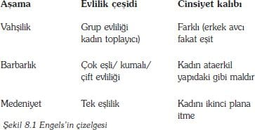

Bu bölüm, Ebru Bilget tarafından çevrilmiştir.
Çağdaş toplumsal kuramın en olağanüstü özelliklerinden biri, insan topluluğu üzerine tutarlı olarak genel tespitler yapmaya çalışırken, en genel ve evrensel bir olguyu gözden kaçırmasıdır. Bu olgu, evrensel cinsiyet farklılığı ve eşitsizliğidir. Ataerkil egemenliğin belki de en şaşırtıcı ispatı şudur: İnsan farklılaşması ve eşitsizliğine ilişkin sorular üzerine uzmanlaşan sosyal bilim, bu gerçeğe karşı kör kalmakta ya da bu gerçeğin gizli kalmasından manevi güç kazanmaktadır. Toplumun diğer bütün yönleri, toplumsal düzlemde, toplumsal ve maddi yapısal kısıtlamalarının ürünü veya insan yapımı olarak kuram haline getirilmişken, cinsiyet kavramı (gender), açıklanmasına gerek duyulmayan cins (sex) diye tarif edilebilecek, geleneksel doğal bir olgu (phenomenon) olarak varsayılmıştır.
Cinsiyet kavramının sosyolojik kuramlaştırmada belli başlı bir konu olarak hak ettiği yeri aldığı bugünkü koşularda, böyle bir kuramın kökleri bu disiplinin dışında kalmaktadır. Cinsiyete ilişkin toplumsal kuramlar, sosyoloji bilimindeki kuramsal projeleri tamamlamaya çalışmaktan çok, büyük ölçüde kadın hareketlerine duyulan pratik bir ilgiden kaynaklanmaktadır. Cinsiyet kuramı, çoğunlukla feminist kuram demektir. Bunun iki sonucu vardır. Birincisi, geniş felsefi feminist literatürün aksine, cinsiyet boyutlu sosyolojik kuramlar, parça parça ve kısa olma eğilimindedirler. Bu bölüm, çoğunlukla bir makale parçası uzunluğunda, fakat birbiriyle bağlayıcı hiçbir ilişkisi olmayan kuramların küçük parçalarına dayanmaktadır. İkinci olarak, cinsiyet kuramlaştırmaları, sosyoloji kuramına nazaran, tam bir bütün oluşturamamaktadır. Bu bölümde yer verilen yazarlar, diğer bölümlerde işlenmemişlerdir. Bu yazarlar, gelişmiş kuramsal konumlara uygun olarak ilk hareketleri gerçekleştiren dışlanmış seslerdir.
Bu yüzden, bu konudaki kuramsal kuralları tanımlamak bu kitapta işlenen toplumsal yaşamın diğer boyutlarına göre çok daha tehlikelidir. Yine de cinsiyet kavramı hakkındaki çağdaş sosyolojik kuramın merkezi elemanlarını tanımlamaya çalışırsak, bu tanımlamaya muhtemelen aşağıda belirtilen fakat üzerinde evrensel uzlaşma sağlanamayan hususları içermelidir:
1- Cinsiyet veya cinsellik kavramına dayalı farklılaşma, toplumlar arasında evrenseldir.
2- Bu farklılık aileyi, ekonomik düzenlemeleri, siyasi düzenlemeleri, dini, eğlenceyi, sanatsal üretimi de içine alarak tek tek bütün toplumların içine işlemiş ve yayılmıştır.
3- Toplumsal cinsiyet (gender) ile cinsiyet (sex) kavramı arasındaki kavramsal fark gözetilmelidir. Tüm doğal popülasyonlar da iki kutuplu olarak yayılmış kategorilere, er ve dişi olan biyolojik karakterlerin bütününe cinsiyet (sex) denir. Toplumsal cinsiyet kavramı ise gerçek veya varsayılan cinsiyet karakterleri ile bağlantılı olarak toplumsal düzeyde inşa edilen toplumsal kimlikler ve beklentiler bütünüdür. Bunun kategorileri eril ve dişil veya erkek ve kadındır.
4- Sosyolojik kuram, bu farklılığı göz önünde bulundururken, kendisini cinsiyet rolleri bakımından tanımlayan cinsiyet (sex) kavramı kuramlarından uzaklaşıp, toplumsal cinsiyet yapılarının incelenmesine doğru kaydırmıştır.
5- Erkek-kadın eşitsizliği de toplumlar arasında evrenseldir. Bu eşitsizlik her zaman erkek egemenliği altındadır. Erkek egemenliğinin en çok kullanılan tabiri ataerkilliktir.
6- Ataerkil kuramlar, genellikle toplumsal hayatın özel ve kamu alanları arasındaki farka dayanmaktadır. İlki evcil (domestic) ve ailevi etkinlikleri içerirken, öbürü özellikle aile dışı siyasi ve ekonomik faaliyetleri içerir. Bu ayrımın devam ettirilmesi ve kadın- erkek ayrımıyla bağdaştırılması çoğu zaman toplumsal cinsiyet kavramını güçlendirmesine aracılık eder. Bu kavram içinde kadınların kamusal ve erkeklerin evcil katkıları göz ardı edilmeye devam etmektedir.
7-Ataerkillik, kadınlığı dışlayan veya aşağılayan sembolik, dilsel, dinsel ve kültürel, sistemler tarafından desteklenip çoğaltılmaktadır. Dolayısıyla, ataerkil toplumlarda kadınlar, erkeklerden sadece maddi olarak değil ahlaki olarak da aşağı seviyeye getirilmektedirler.
Bu bölüm toplumsal cinsiyet kavramı üzerine, erkek sosyologlar tarafından yapılmış kuramsal tespitleri inceleyerek başlayacaktır. Bu noktada, sosyolojik kuramın geleneksel olarak cinsiyet farklılığının kaçınılmaz olduğunu, cinsiyet eşitsizliği diye bir şey olmadığını gösterecektir. Buna karşın ayrıca Engels'in sıra dışı katkıları da tartışılacaktır. Daha sonra yukarıda bahsedilen görüşlere meydan okuyan Beauvoir, Friedan ve Millett[60] gibi kimi yirminci yüzyıl feminist görüşleri yansıtacağız. Ayrıca bu bölümde eleştirel yapısalcı ve Yorumsamacı (constructionist) geleneklere uyan sosyolojik kurama çağdaş katkıları da gözden geçirecektir. Ve sonunda bölüm sosyolojik düşüncelere bir çok yönden zıt duran cinsiyet farkları hakkındaki bazı post-yapısalcı kuramları anlatarak bitecektir.
Erkek-eğilimli kuram
Feminist sosyologlar çoğu zaman, erkek-eğilimli terimini, disiplinin, hakim noktasını ya da temel noktasını (mainstream) tasvir edebilmek için kullanmaktadırlar (burada İngilizce iki sözcüğün benzer telaffuzları dikkat çekici bir unsur olarak kullanılmaktadır, çn.). Böyle yaparak kuramın, ya cinsiyet kavramına karşı kör olduğunu ya da cinsiyet farklılığını doğal bir olgu olarak kabul ederek, sosyolojik açıklamalara gerek olmadığını öngörmektedirler. Erkek-eğilimli kuramın incelenmesi iki kısımda yapılacaktır. İlk kısım, bu konuda hiçbir görüşü olmayan, ondokuzuncu yüzyıldaki bir takım düşüne kırıntılarını inceleyecektir. İkincisi çağdaş gelişime bakacaktır.
Temeller
Burada on dokuzuncu yüzyıldaki bu düşünceyi kuran temel iddiaları inceleyeceğiz. İlk iki kuramcı, İngiliz antropolog Maine ve Maks Weber kaynaklı Yorumsamacı düşüncelerdir. Bunların ikisi de toplumsal cinsiyet kavramına eleştirel olmayan ve yumuşak yaklaşımlar sergilemektedirler. Üçüncüsü Maks'ın arkadaşı ve işbirlikçisi Engels'in iddialarıdır. Engels, çoğundan daha az erkekeğilimlidir; çünkü en azından kadınların aşağı seviyede olmasını eleştirmiştir. Bu yüzden onun çalışmaları çoğu zaman çağdaş feminist düşüncenin içinde değerlendirilmektedir. Ancak, yine de o da bir erkekeğilimli olarak değerlendirilmektedir. Çünkü, cinsiyet farklarının sebeplerini, kapitalizmin erkekçil (masculine) yapılarının işleyişine nazaran ikinci seviyeye itmektedir.
Maine: Sözleşme ile ikincilleştirme (boyuneğdirme)
Cinsiyet egemenliği ile ilgili ilk çalışmalardan biri, on dokuzuncu yüzyıl antropologu Maine'den gelir. Maine'in önemi hukuk sistemlerinin evrimini incelerken, ataerkillik kavramını araştırma alanına sunmuş olmasıdır (1963). Fakat, bu analiz antropolojik ve sosyolojik araştırmaların bilimsel standartlarından yoksundur. Bu analiz, toplumun yüzyıllar süren evrimsel bir gelişmenin sonucu oluştuğu yönündeki ondokuzuncu yüzyıl İngiliz toplumsal, bilimsel düşünce ile örtüşmektedir. Ancak, yapısal değişme ile ilgili kavramsal çalışma aslında, içinde oluşturulduğu toplumsal bağlamdan daha karmaşıktır.
Maine'ye göre modern hukuk kurumsallaşmadan önce, toplum evrensel ataerkil kişiliği olan ailelerden meydana gelmekteydi (1963:118-19). İncil kaynaklarına dayanarak ataerkil organizasyonun boyutlarını anlatıyor:
En yaşlı erkek ebeveyn ev halkı içinde kesin şekilde üstündür. Hakimiyeti, yaşam ve ölüme kadar uzanır. Ve çocukları, evleri, köleleri üzerinde hakimiyetinden sınırsız bir şekilde kullanmaktadır. Kölelik ve oğul olmak arasında tek fark çocuğun, taşıdığı kandan dolayı, ilerde ailenin başına geçme şansının olmasıdır. (1963:118).
Ataerkil aileler ekonomik birimler olduğu için, aynı zamanda emperyalisttiler. Sürekli topraklarını ve iş güçlerini fetih ve devşirme yolu ile artırmaya çalışıyorlardı. O yüzden topluluklar kuruyorlar ve hatta ilkel devletler haline geliyorlardı. Ama aralarındaki bağlayıcı unsur her zaman için yaşayan en büyük erkeğe itaat idi.
Eski Roma hukuku ataerkilliğe dayanan tipik bir gelişmedir. Burada kadınlar evlenince kocalarının "kız kardeşleri" konumuna geliyorlardı. Kanuni veya devlet korumalarının engellemesi olmadan, kocaları tarafından yönetiliyor ve disipline ediliyorlardı. Buna karşılık, modern kanunda (örneğin 19. yüzyıl) bekar kadınlar resmen özgür olup, yalnızca evli kadınlar kocalarının arzularına itaat mecburiyetindeydiler. Resmi olarak ondokuzuncu yüzyıldan itibaren kadınlar, gönüllü olarak karşılıklı anlaşmalar yoluyla erkeklerin isteklerine teslim oluyorlardı. Kadınlar artık sahip olunan cisim statüsünde değillerdi. Maine, bunu statüden kontrata doğru uzanan daha genel bir hareketin parçası olarak görmekte (1963:165).
Maine, kendisi de çok tatmin olmuş olmasa da, başka yerlerde de olduğu gibi, bunun sonucunu şu şekilde açıklıyor:
Antik hukuk, kadını kan bağına göre ikinci plana iterken, modern yasaların göze çarpan ana konu, kadını kocasına göre ikinci plana itmesidir. Kadının, evlilik çağı gelene kadar ki bütün ilişkiler, gözetim altındaki statüsü, kocasının dışındakilere bağımlılığı, hep kontrattan kaynaklanan ilişkilerdir[61] (Maine 1963:149,164).
Weber: Ataerkillik
Yorumsamacı toplumsal kuramdaki kurucu kişi olarak Weber'in cinsiyet kavramına ilgisi, 'güc'ün genel yapısından çok örgütsel baskı sisteminin gelişimi ile kısıtlıdır. Bu yüzden, Weber ataerkillik terimi yerine "ataerkilcilik" (patriarchalism) terimini kullanır. Ataerkilciliği geleneksel hakimiyet diye adlandırdığı kategorisinin en temel örneği olarak görür (bkz.223) hakimiyet talep eden, konum, talepler, güç ve kuralların oluşturduğu geleneklere dayanmaktadır.
"Ataerkilcilik" genellikle ekonomik ve akrabalık temelinde oluşan bir grup içinde, belli bir kişi, belli miras kurallarına göre kimin yönetime geleceğini tayin ettiği bir durumdur. Ataerkillik ve yaşlı egemenliği çoğu zaman yan yana bulunmaktadır (1978:231).
Ataerkillik örgütsel oluşumun çok ayrıntılı tipolojisinde çok sınırlı bir hükmetme tipidir. Bu, ototrite sadece kendi ev halkına hükmettiğinde geçerlidir. Bu şu iki terimle karşılaştırılabilir. İlki ataerkil kuralların veya atanın (patriarch) ev dışında hüküm sürdüğü "gerontocracy"dir. İkincisi akrabalık dışında birine parayla bağlı olunan ve iş verenlikten kaynaklanan hükümdarlık olan "patrimonial bürokrasi"dir.
Ataerkillikte atanın gücü sınırsızdır. Ev halkı içinde kadınlar ve çocuklar mülkiyet'tirler. Weber'e göre kadınlar bağımlıdır. Bunun sebebi erkeğin fiziksel ve zihinsel enerjisinin üstünlüğünden kaynaklanmaktadır (1978:1007). Maine gibi Weber de kadın ve çocukların ataerkillik altında statüsünün kölelerden çok az farklı olduğunu düşünmektedir. Onlar da köleler gibi alınır, satılır, kiralanır, ipotek edilir. Maine gibi o da şu iki statü arasındaki kademesel farklılaşmayı kabul eder. Bunlardan ilki kadın ve çocukların eski Roma'daki statüleri, ikincisi ise kadın ve çocukların, ataerkil hakimiyetten, gittikçe artan bir şekilde bağımsızlaşmalarıdır.
Engels: Kadınları sahiplenme
Weber'in yorumsamacı görüşüne zıt olarak toplumsal cinsiyet kavramı hakkında yapısalcı düşünce, kadının gördüğü baskının sınıf yapısının bir parçası olduğu görüşündedir. Özel mülkün kontrolü, yalnızca bazı erkeklerin diğer erkeklere hükmetmesini değil, tüm erkeklerin kadınları kontrol etmesini de sağlamıştır. Kadınların ev alanı ile sınırlandırılması, onların sistemin kendi kendisini yenilemesini garanti altına almasını sağlaması anlamına gelmektedir. Çünkü, kadınlar çiftleşir, yeni işçiler doğurup eğitir. İşçi kocaları besleyip, duygusal destekte bulunur. Ayrıca kadınlar öyle bir potansiyel iş gücü ordusudur ki, savaş zamanları ve üretimin genişlediği zamanlarda sisteme girer ve ardından hemen ev alanına tekrar geri dönerler. Böyle bir ordunun varlığı erkek iş gücünü ve pazarlık iş gücünü azalttığı için hükmeden sınıfında işine gelir.
Erkek egemenliğinin kökeni mülkiyet kurumudur. Marks'ın kendisi kadınlar hakkında çok yazmamıştır. Fakat, yakın çalışma arkadaşı sosyalist feminist kuramın temelini kuran Engels, ilkel bir aile antropolojisini inşa etmiştir (1975). Engels çağdaşı olan antropolog Morgan'dan esinlenerek, tarih öncesi devirleri bir dizi aşama olarak görür. Bu Şekil 8.1. de görülmektedir.
İlk aşama olan vahşilik, ilkel komünizm veya bugün avcı toplum denilebilecek olguya karşılık gelir. Burada mala yalnızca toplumsal olarak sahip olunamaz, aynı zamanda karşılıklı ilişkiler özgür ve açık bir şekilde yapılır. Bunun anlamı, bir cinsiyetin diğer cinsiyete hükmedemeyeceğidir. İkincileştirme/boyun eğdirme barbarlık aşamasında oluşan özel mülk kavramıyla birlikte ortaya çıkar. Bu aşamada kırsal sürüler ve tarımsal alanların sahipliği gücün kritik bir kaynağı olarak görünür.

Erkekler, toprakları hayvanları ve köleleri birleştirebilecekleri ataerkil aileler kurarlar (Engels, 1975:121). Evlilik, çok kadınlı ve kumalı çiftlerden oluşur. Bunlar üzerinde erkeğin mutlak hakimiyeti vardır. Bu aşamada, kadın eşin sadakatini ve çocuklarına anneliğini güvence altına almak için, şartsız bir şekilde kocasının gücü altına geçer. Eğer erkek karısını öldürürse, hakkını yerine getiriyor demektir (Engels 1975:122).
|
Friedrich Engels (1820-95) |
| Engels Almanya da Düsseldorf yakınlarında Barmen'de doğdu. Servetini tekstilden kazanan zengin bir ailenin çocuğu idi. Berlin'de felsefe okudu. Orada eski bir üyesi Karl Marks olan genç Hegelciler isminde radikal bir örgüte katıldı. Ancak, Marks ile tanışması daha sonraya rastlar. Engels Neue Rheinische Zeitung adlı devrimci gazete için makale yazarken Marks aynı gazetenin editörü idi. 1840'larda İngiltere'yi ziyaret etti. Orada çalışan sanayi işçilerinin durumu onu çok etkiledi. Daha sonra Marks ile yakın bir arkadaşlık kuracağı Brüksel'e taşındı. Aile içini idare etmeye devam etti. Bu onun siyasi işlerini karıştırıyordu. Ama en azından ömür boyu çalışma arkadaşı olan Marks'a parasal destekte bulunuyordu. |
|
Kaynak: McLellan (1977) |
Kadınların ikinci plana itilmesi tek eşlilik aşamasında en alt seviyesine ulaşır. Engels bu aşamayı ana hakkının baba hakkına transferi olarak tanımlamaktadır. Tek eşlilik zenginliğin, refahın tek bireyin (bir erkeğin) elinde yoğunlaşmasından ve bu zenginliği o erkeğin çocuklarına vermek ve başka hiçbir kimseye vermemek ihtiyacından kaynaklanır (1975:138). Barbarlıkta, grup evliliği, bireysel, özel mülk kurumunun yeniden çoğalmasını önlemektedir. Çünkü, bireysel miras hakkını kesinlikle reddetmektedir. Tek eşlilikte kadınların ikincileştirilmesi ve ev alanıyla kısıtlanmaları öyleyse bağımsız bir işleyiş değil, kapitalist üretim sisteminin gelişimiyle ilgilidir.
Sosyalist feminist kuramda çok etkili bir hale gelen bir düşünce biçiminde, Engels cinsiyetler arasındaki ilişkinin bir sınıf ilişkisi olduğunu ifade etmektedir:
Tarihte görülen ilk sınıf çatışması kadın ve erkek arasındaki tek eşlilikteki çatışma ile örtüşmektedir. Ve ilk sınıf baskısı kadınların erkek tarafından baskı altına alınması ile rastlaşır (Tek eşli evlilik) bir grubun gelişmesinin ve zenginliğinin diğer bir grubun sefilliği ve baskı altın alındığı göreli bir geri çekilmedir (Engels, 1975: 221).
Engels ayrıca ikincileştirmeyi dişi cinsin kısıtlanması ve baskı altında tutulmasına bağlamaktadır. Kadınlar erkeklerin aksine grup evliliğinin yok olmasından dezavantajlı duruma düşmüştür. Erkekler grup evliliklerinin cinsel etkinliklerine devam ettirmelerine rağmen (zina ile) kadınların bunu yapması ahlaki düşüklük olarak algılanmaktadır. Bunun sonucu, kadının cinselliğinin fahişelik kurumu ile mallaştırılmasıdır (Engels 1975:138). Sömürünün bu radikal biçimi, ancak genel toplumsal bir devrimle kaybolabilir. Ama ilginçtir ki toplumsal devrim grup evliliklerini yeniden gündeme getirmeyecek gerçek tek eşlilik yaratacaktır:
Üretim araçlarının toplumsal mülkiyete dönüştürülmesi, ücretli emeği, proleteryayı yok edecektir. Dolayısıyla, belli sayıda kadının para için kendini satma ihtiyacını beraberinde yok edecektir. Fahişelik yok olacak, tek eşlilik, ortadan kaybolmayacak, en sonunda erkekler için de bir gerçeklik halini alacaktır (Engels 1975: 139).
Engels böylece kendini romantik bir kişi olarak ortaya çıkarır. Sınırsız cinsel ilişkiler kişisel sevgi-seks'i ile önlenecektir. Bu da eşin sürekliliğini sağlayacaktır.
Çağdaş Gelişmeler
Burada iki temel çağdaş erkekeğilimli ve anti-feminist cinsiyet kuramını göreceğiz. Bunların ikisi de toplumsal cinsiyet kavramını cinselliğin biyolojik kaçınılmazlıklarına indirgemeye çalışır. Bunlar, Parsons'ın işlevselci kuramı ve sosyo-biyolojinin dar yapısalcılığıdır. Ayrıca böyle erkekcil görüşlerin genel kurama ve toplumsal tabakalaşma araştırmalarına nasıl sokulduğunu inceleyeceğiz.
Parsons: Araçsal İnsan
Yıllardır Engels'in sosyolojik alternatifi, Parsons (Parsons ve Bales 1955) tarafından geliştirilen ve aile içinde cinsiyet rollerinin farklılığına dayanan, işlevsel kuram olmuştur. Aileler iki boyutta farklılaşmaktadırlar. Birincisi, bireylerin göreli güçleri, ikincisi ise dahil oldukları etkinlik türlerdir. İlki, ebeveynleri çocuklardan farklılaştırır, ikincisi çok daha çelişkilidir; çünkü erkeği-kadından ayırmaktadır. Bunu biraz daha ayrıntılarına inerek inceleyebiliriz.
Parsons, tüm insan gruplarının iki tip etkinlik de bulunduklarını ileri sürmektedir. Bunlardan ilki, görevleri-yerine getirme veya "araçsal" etkinliklerdir. İkincisi ise duygu ve heyecanların dile getirilmesi ile oluşan dayanışmanın devamını amaçlayan etkinliklerdir. Küçük grup araştırmalarında, bu etkinlikler, sosyo-duygusal etkinlikler olarak adlandırılırlar. Ancak, Parsons onları "dilegetirici" etkinlikler şeklinde adlandırılmaktadır. Küçük grupların örnekleri olarak aileler, cinsiyete göre farlılaşmaktadırlar. Böylece kadınlar "dilegetirici" görevleri yaparken, erkekler "araçsal" görevleri yapmaktadırlar.
Araçsal-dilegetirici farkı, Parsons için bir sorun değildir. Ancak, evrensel olarak kadınların açıklayıcı liderler, erkeklerin ise "araçsal" liderler olduğu varsayımını açıklamak güçtür. Parsons'un açıklaması biyolojiktir:
Çocukların doğumu ve bakımı annenin çocuğuna karşı güçlü bir ilgi göstermesini gerektirmekte, bu biyolojik işlevlerden dolayı erkeklerin de alternatif araçsal yönde uzmanlaşması gerekmektedir (Parsons, Bales 1955: 23).
Ancak Parsons, konunun biyoloji seviyesinde kalmasına müsaade etmemektedir. Cinsiyet farklılıklarını üreten toplumsallaşma sürecini analiz etmeye devam etmektedir. Freud'un çocukluk gelişiminin Oedipal aşamasına ilişkin düşüncesi üzerinde durmaktadır (bölüm 4). Parsons, erkek çocukların toplumsallaşmasının ilk aşamalarında babanın yokluğunu kabul etmekle işe başlar. Çocuk, iletişim ihtiyacı aşamasına geldikçe ve kendi kontrolünü kazandıkça anne ile iletişime geçmekte ve bu sevgiye dönüşmektedir. Buradaki ana nokta, çocuk açıklayıcı ve aşağı bir durumda iken anne hem üst durumdadır hem de araçsaldır.
Oedipal aşama üç ve altı yaşları arasında meydana gelir. Ve bu sırada baba, erkek çocuğunu annesinin sevecenliklerinden uzaklaştırmalıdır. Parsons şöyle der "Baba, en azından sembolik olarak, uyum ve özerk davranışlar için yeni taleplerin birincil kaynağıdır. Anne ise sevgi ilişkisinde "güvenlik" veya "kabul edilmenin" temel kaynağıdır (Parsons ve Bales 1955: 80). Baba, oğlu için önemini disiplin kullanarak kurar. Oğlan, anne sevgisinden yoksun bırakılmasına tepki gösterir ve saldırganlaşır. Kız çocuklarının oğlanlara kıyasla annelerinden ayrılmasına gerek görülmez ve ebeveyn disiplininden geçmeleri beklenmez. Hem anneleri hem babaları için farklılaştırılmamış sevecenlik beslemeye devam ederler. Parsons görüşünde öyleyse sosyalleşme süreci erkekler ve kızlar için köklü şekilde farklıdır. Erkek çocuklar, babanın müdahalesine saldırgan bir biçimde adapte olmak zorundadırlar. Ama kızlar bunu yapmak zorunda değildirler. Ve pasif ve sadık aile üyeleri olarak kalabilirler. Bu toplumsallaşma içeriğinin kız ve erkekler için farklı olarak kabul edildiği, genellikle farklılaştıran toplumsallaşma görüşüyle çatışabilir.
Sosyobiyoloji: Canlandırılmış toplumsal cinsiyet
Sosyobiyolojinin yönlendirici ilkesi şudur; insanların, öbür hayvan türleri gibi, çoğalma güdüleri vardır ve bu güdüler onları çiftleşmeye/eşleşmeye zorlar, bu da başarılı çiftleşme için aralarında bir yarışmaya yol açmaktadır. Bu yarışmada, türü daha da çoğaltacak en iyi kapasiteye sahip olanlar, diğerlerinden ayrılacaklardır. Türlerin sayıca büyümesi erkekler ve kadınları farklı davranışlara zorlamaktadır:
Kadınların, çoğalmadaki başarılarına daha az katkı yapan türden eşleri kabul etmelerine izin veren genler, kadınları daha seçici olmaya zorlayan genlerden daha az kendilerine benzeyen ürünler vermelerine neden olacaktır. Aynı şekilde, seçicilik genleri daha az ayırt edici genlerin zararına artacaklardır. Erkekler için ise daha farklı bir strateji uygulanmaktadır. Daha az engel ile en yüksek düzeyde avantajlar bireylere sunulmaktadır. Genetik olarak yüklenen "hızlı sev ve gevşe" ve "sev ve terk et" gibi eğilimler, aslında hiçbirimizin kabul etmeye yanaşmayacağı kadar biyolojik gerçeklikleri yansıtabilir (Barash 1980:48).
Farklı cinsel davranışlarla ilgili bu eğilim sosyobiyologlar tarafından cinsel olmayan alanlara da genellenmiştir. Buna göre, Parsons'da olduğu gibi, erkekler saldırgan ve araçsal, kadınlar boyuneğici (submissive) ve açıklayıcı olmaya zorlanmaktadırlar. Ancak, bu düşünce aşağıdaki sorunsal varsayımları beraberinde getirmektedir:
Bu yaklaşıma göre, insanlar, önceki tecrübeleri ve toplumsal fırsatlar temelinde eşlerini seçtiklerini düşünürlerken, aslında eşleri genler seçmektedirler.
Bu yaklaşım, bireylerin ailelerinden genetik bir miras aldıklarını göz ardı etmektedir.
Toplumsal cinsiyet farklılığının, toplumsal kalıpları o kadar geniştir ki genetik farklılıklar bunu açıklayamamaktadır.
Daha ciddi biyolojik bir iddia, biyolojik çoğalmanın kadınlar ve erkekler üzerinde oluşturduğu kısıtlamaları incelemektedir. Örneğin, Foks (1976:31-2) kadınların çocuk doğurma ve büyütme, erkeklerin ise evlenme, kavga etme ve karar verme işlerinden sorumlu oldukları eski toplumun bir şekilde kendisini genetik olarak ilerlettiğini ve çağdaş toplumsal düzenlemeleri yapılandırdığını, iddia etmektedir. Dolayısıyla kadınlar boyun eğmeye, erkekler ise hükmetmeye genetik olarak programlıdırlar. Foks'un kendisi de, bu tip bir düşüncenin pratik sorunları olduğunu de itiraf etmektedir:
Toplum daha teknokratik hale geldikçe bir çok rolü doldurmak için gereken uygun insanları bulmak için yalnızca erkeklerden fazlası gerekir. O yüzden kadınlar bazı alanlarda hükmedici pozisyonlara gelecektir. Fakat bu genellikle temel kadın işlevi ile çatışma yaratacaktır (1976: 32).
Foks, ev ve kamu hayatı arasında bir çelişmemenin olmadığı toplumsal düzenlemeler (örneğin gündüz çocuk bakım evleri) kurulmasının gayet mümkün olduğunu görmemektedir. Bazı kadınların, çocuk doğurmalarının da imkansız olduğu da bir gerçektir. Kadınların kamu hayatına tam ve etkili olarak git-gide artan sayılarda katılması, biyolojik açıklamaların sürdürülmesinin zor olduğunun bir göstergesidir.
Tabakalaşma Kuramı Erkek Eğilimliliğin Miyopluğu
1970'lerde ve 80'lerde sınıf ve tabakalaşmanın işlevsel ve yapısal analizleri hakkındaki temel tartışmalardan birtanesi, kadınların bir toplumsal tabakalaşmanın kamu alanı sistemi içinde nasıl konumlandırılabilecekleriyle ilgiliydi. Bu tartışma için en büyük güçlük geleneksel sınıf analizinin cinsiyet-kör olduğunu (cinsiyet ayrımcılığı yapmadığını, çn.) söyleyen feminist düşüncenin etkisidir. Aşağıdaki alıntılar bu noktayı doğrulamaktadır. Bunlardan ilki Parson'in toplumsal statülerin işlevsel analizidir:
Toplumumuzdaki cinsiyet rollerinin ayrımı, kadınları ailenin statüsünün belirlenmesinde önemli olan, mesleki statülerden uzaklaştırmaktadır. Evli kadınlar, ev dışında çalıştıkları yerlerde, kendi sınıfındaki erkeklerle, statü için çekişme durumunda değildirler.
Kadınların ilgi alanları ve onlara uygulanan değerlendirme standartları, erkeklerden farklı olarak, daha çok kişisel süsleri ve kişisel çekicilikleri ile ilgilidir (1954: 80).
İkincisi ise Parkin'in yorumlayıcı sınıf kuramıdır:
Cinsiyet farklılıklar ile ilgili eşitsizlikler, tabakalaşmanın öğeleri olarak düşünülmemelidir. Kadınlar, toplumdaki toplumsal ve ekonomik ödüllendirmeleri, genel olarak aileleri veya başlarındaki eşleri tarafından belirlenmektedir. Kadınlar bu günlerde çok önemli yerlerde görev almalarına karşın, belli alanlardaki söz hakları genellikle eşleri veya babaları tarafından verilir (1979: 14-15).
Sosyologlar böyle bir duruş içerisinde, bir erkekle beraber yaşayan kadının iş statüsünü erkeğinkinin devamı olarak niteleyip, bekar bir kadının iş statüsünü göz ardı edebiliyordu. Bunun sonucu olarak, kadınlar mesleki statü konusunda yapılan temel araştırmaların çoğunda, dışarıda bırakıldılar. Buna Blau ve Duncan de (1967) dahildir. Ayrıca 1965'te (Broom ve Jones 1976) Avustralya'da yapılan hareketlilik anketi ve 1970 yılında Steword'ın yapmış olduğu İngiliz meslekleri anketi buna dahildir.
Kadınların sınıf sistemi içindeki yerlerinin ölçülmesini belirleyen üç tane yaklaşım vardır (Goldthorpe 1987: 281-96).
1. Genel kabul görmüş bu yaklaşım yukarıdaki yaklaşımlarla uyumlu olup, kadının statüsünün onların babaları ve kocaları tarafından belirlendiğini ileri sürer. Kadınların hareketliliği ve ilerlemesi gibi konular çoğunlukla kimle evli olduklarına bağlı olarak belirlenir. Goldthorpe (1983) bu bakışı şu şekilde savunmaktadır. Son yıllarda kadınların iş yaşamında aldığı görevler aralıklı ve yarı zamanlı çalışmalar olup, bu işler, başka bağlamlarda, tamamlayıcı ücretli işler olarak adlandırılır. Kadının statüsünün bu bağlı karakteriyle doğru orantılı olarak endogami olarak da adlandırılan tabakalaşma analizi yapılabilir (Jones ve Davis 1988).
2. "Bireysel yaklaşım" olarak da bilinen bu yaklaşım kadın ve erkeğin piyasadaki işlerde iki ayrı bağımsız emek satıcıları olarak davrandıkları ve buna bağlı olarak kişisel statülerin geliştirdikleri görüşündedir. Burada aile veya ev halkı analiz birimi olarak kabul edilmemektedir. Heate ve Brittan (1984) tarafından uyarlanılan bu yaklaşıma göre kadınlar aralıklı ve yarı zamanlı işlerde çalışmalarına rağmen bu işlerdeki kariyerleri yaşam boyunca istikrarlı bir şekilde devam etmektedir. Goldthorp (1987:286) ise bu yaklaşımı reddederken kadın ve erkeklerin statüleri arasında yüksek düzeyde benzemezlikler olduğunu kabul etmektedir. Ancak, bu sorun bu yaklaşımı "sınıf arası aile", olarak bilinen kuramsal olarak garip bir kavramdan ayrı koyamamaktadır. Bu kavramın garip olarak adlandırılmasının nedeni, onun sınıf veya tabakalaşma analizinin bilinen bütün ilkelerine karşı durmasıdır. Bunu yaparken de, ev içi etkileşimin en temel seviyesinde sınıf/tabaka aykırılığı ilkesini çiğnemektedir.
3. Üçüncü yaklaşım ise 'hakimiyet yaklaşımı'dır. Bu yaklaşımda da kadın ve erkeğin statüleri, iş ortamında belirlenir. Fakat, hangisi iş yaşamında üst seviyede ise aile içinde o daha baskındır. Bu yaklaşımın aşağıdaki şekilde kuralları vardır. İş sahibi olan, iş sahibi olmayana göre daha baskındır. Tam zamanlı çalışan, yarım zamanlı çalışana nazaran daha baskındır. Daha üst statüde çalışan daha az statüde çalışana göre daha baskındır (Goldthorpe 1987:290-1). Bu yaklaşım çok fazla kullanılmamakla birlikte toplumsal cinsiyet kavramına çeşitli duyarlılıklar getirmektedir. Çünkü çalışan ve çalışmayan, evli ve bekar kadınların statü durumlarının analizini içinde barındırmaktadır. Ancak, baskınlık/hakimiyet kavramı, gerçek süreci geçerli temsil etmekten çok yöntemsel olarak uygun olup olmama şeklinde düşünülmektedir.
Dördüncü bir yaklaşımın oluşmasına ihtiyaç vardır; bu da bütün yaklaşımların ortak noktalarının birleştiği, ortak bir yaklaşımdır. Bu yaklaşım, kadın ve erkeklerin işleri arasındaki etkileşimi açıklayabilmeli ve bunların, statüleri üzerine yaptıkları etkilerini de göz ardı etmemelidir. Örneğin, yarım zamanlı çalışan bir hemşire 20 yaşındaki bekar bir kadından, boşanmış çocuklu dul bir kadından, eşi öğretmen olan bir kadından farklıdır. Yukarıdaki üç yaklaşımdan hiç biri bu cinsiyet-sınıf etkileşimi etkisini tam olarak kapsayamamaktadır. Garnsey'inde (1982) ifade ettiği gibi, temel iş bölümü ve emek pazarı arasındaki ilişkilerin yeniden modellendirildiği yeni bir yaklaşıma ihtiyaç vardır.
Feminist Eleştiriler
Yukarıda da özetlendiği gibi toplumsal cinsiyete ilişkin sosyolojik kuramlar çok geniş bir biçimde erkeksidir (masculine) (yani erkek düşüncelerinden kaynaklanmışlardır, çn). Bu yaklaşımın yetersizliği üzerine eleştiriler 1960'larda başlayan ikinci kadınların özgürlüğü hareketi sırasında artan feminist felsefe nedeniyle açığa çıkmaya başlamıştır. Aşağıdaki üç tane göze çarpan etkili bir örneği göstereceğiz. Bunlardan ilki bir Fransız'ın, ikisi ise Amerikalı'larındır.
De Beauvoir: Toplumsal cinsiyetin doğuşu
De Beauvoir'ın İkinci Cins (The Second Sex) (1972) adlı eseri, çağdaş feminist düşüncenin başlatıcısı olmuş bir yapıttır. De Beauvoir kadınlar ve erkekler arasındaki farklara ve eşitsizliklere ilişkin üç erkekçil açıklamayı reddetmektedir. İlk olarak, sosyo-biyolojik açıklamaları reddetmektedir ve farklı türlerde cinsiyetin hiç de farklılaşmadığına ilişkin çok sayıda kanıttın bulunmuş olduğunu belirtmektedir. İkinci olarak, kadınların penis gıptası yüzünden, ikinciliklerini kabul ettikleriyle ilgili Freud'un psiko analitik kuramını reddetmektedir (örnek Parsons). Aslında, kızların penise gıpta etmek gibi bir olayın olmadığını düşünmektedir. Çünkü bu doğal güçsüz et parçası, kadınlara sadece kayıtsızlık duygusu, hatta iğrenme duygusu vermektedir (1972:73). Dahası, Freud cinsel bağlantı ila toplumsal bir orijine sahip babasal baskınlığı karıştırmaktadır. İçine girdiği her bir karışıklıkta sorun, kadını aşağı bir konuma indirgeyen tasarılara izin veren erkekcil bir bakış açısından kuramın yazılmış olmasıdır. Üçüncü olarak, Beauvoir, Engels'in tarihsel maddecilik yaklaşımını reddetmektedir. Çünkü, bu yaklaşım, toplumsal cinsiyet kavramını, erkekcil sınıf mücadelesi aracılığı ile açıklamaktadır. Yine de Beauvoir bu görüşe daha sıcak bakmaktadır.
|
Simone de Beauvoır (1908-1986) |
| Paris'te avukat bir ailenin çocuğu olarak dünyaya gelmiş ve Sorbonne'de felsefe okumuştur. Tüm yaşamını, aktif bir toplumsal-siyasi bir feminist olarak geçirmiştir. Evlenmeyi ve çocuk sahibi olmaya reddetmiş, Jean-Paul Sartre ile belirsizlik ve özerklik üzerine kurulu gevşek bir ilişkiyi sürdürmüş ve onunla birlikte kürtajın yasaklanması üzerine kampanyalar organize etmiştir. Verimli bir hikayeci ve önde gelen halk entelektüeli idi |
|
Kaynak: Tuttle (1987:33); de Beauvoir (1972:1) |
De Beauvoir'in toplumsal cinsiyete ilişkin kuramı, diğer tüm feminist kurucuların kuramında olduğu gibi, bütüncül ya da toptancı bir açıklama yada kendi deyimi ile varoluşçu bir açıklamadır. Bir yanda bedeni ve ruhu, diğer yanda toplum ve kültürü kurarak, kadını ikincil planda kalması pekiştirilmiştir. Gerçekten de, iki aşamalı bir kuramdır bu. İlk aşama biyolojik ve genetik (tarihsel) iken, ikince aşama toplumsal yeniden üretime (çoğalmaya, çn) dayanmaktadır. İlk aşamada, toplumsal cinsiyet farklılıklarının doğuşu, ilkel teknoloji koşulları altında, doğal yaşama çevresi ile türlerin biyolojisi arasındaki bağlantı sonucu şekillenmiştir. İlk yağmacıların etkileyici antropolojisine dayanarak de Beauvoir şunu iddia etmektedir:
Erkeklerin üstün gücü, vahşi yaşam zamanında çok önemli olmak zorundaydı. İnsan türünün ilk günleri çok zordu. Toplayıcılık, avcılık ve beslenme için insanlar toprağı güçlükle işliyorlar ve bunu yapmak içinde çok çocuk doğuruyorlardı. Kadınların olağan dışı doğurganlığı onların bu işlerine olan aktif katkısını önlüyordu. Çocuk doğurma ve emzirme bir etkinlik değil, doğal işlevdir, önceden yapılmış bir plana ihtiyaç yok. Bunlara sahip kadınların, kendi varlıklarının yüce bir varlık olduğu gibi bir hisse kapılmamalarının nedeni de budur. Erkeğin durumu ise çok daha farklıdır. Hayvani doğasını aşarak, grup için çeşitli destekler sağlamalı idi. Var olmayı sürdürebilmek için, yarattı; şimdiyi hızla geçti ve geleceği araladı. İlk zaman erkeklerinin bu görevleri, onlara inanılmaz bir şeref sağlamaktaydı ve buda çok tehlikeliydi (1972: 93-5).
Bu gizemin tüm sırrı, yerli toplumlarda biyolojik farklılıklar ile zor ve tehlikeli çevredeki yaşama kabiliyetlerinin birleştirilmesi erkeğin mutlak egemenliğine yol açmış olmasıdır (1972:96-7).
İlkel koşullar, erkeğe büyük bir avantaj sağlamıştır. Erkekler bu avantajlarını sadece bitki yetiştiren toplumlarda kadınlara bırakmışlardır) kadınlar toprak sahibi olabiliyorlardı ve ekip biçebiliyorlardı). Fakat tarım geliştikçe ve arazi yeniden çok önemli bir hale geldiğinde, onlarda bu avantajlarını geri talep etmişlerdir. Erkek egemenliğinin ilerleyişi oldukça acımasızdır. Erken tarım topluluklarında, erkekler bu olağanüstü güçlerini ve statülerini arazileri kontrol altına almak için kullanmışlar; egemenliklerini haklı çıkaracak dini sistem oluşturmuşlar; mülkiyet hakkının direk babadan-oğla geçtiği ataerkil aileler kurmuşlar ve toplumlar modernleştikçe, kendi hakimiyetlerini meşrulaştıracak, soyut yasalar ve toplumsal kontrol sistemleri kurmuşlardır. Bunlar toplumsal yeniden üretimin, küçük-küçük süreçleri olarak şekillenmişlerdir. "Ve böylece, azar azar erkekler egemenliklerini, sembolik temsillerde, pratik hayatta kabul ettirmişler ve erkekçil ilkeler kazanmışlardır (1972:106).
Edebiyat kuramcısı olarak, de Beaviour, en çok, kültürel ürünlerin özellikle edebiyatın, kadınların toplumdaki dezavantajlı statülerini nasıl onayladıkları konusu ile ilgilendi, fakat kuramı, her zaman maddeci bir kuramdı: "İnsanlığın başlangıcından beri, erkeklerin biyolojik avantajları, onların biricik ve egemen statülerini kesin bir şekilde kabul ettirmelerini kolaylaştırmıştır (1972:109).
Friedan: Kadıncıl yanılgı
De Beauvoir erkek egemenliğinin kaynağını tanımlamaya çalışırken Friedan, kadınların neden ikincil, güçsüz, sömürülmüş bir konumu kabul ettiklerini sorgulamaktadır. Ve buna cevabı, bu kabulün, kadınların biyolojilerinden çok, "kadıncıl mistik/gizem" olarak adlandırıldığı bir ideolojinin kurbanı olmaları ile ilgili olduğu, şeklindedir.
Geleneklerin ve Freudcu düşüncelerin yüzünden, kadınlar kendi kadınlıklarını takdir etmenin dışında herhangi bir gelecekleri olabileceğini ileri sürememektedirler. Uzmanlar kadınlara; bir erkeği nasıl bulacaklarını ve ellerinde tutacaklarını, bir çocuğu nasıl besleyeceklerini ve onu nasıl tuvalet ihtiyaçlarını gidereceklerini, kardeşlerarası kavgayı ve ergenlik isyanını nasıl önleyeceklerini, nasıl bulaşık makinesi alacaklarını, nasıl ekmek ve yemek pişireceklerini, nasıl giyineceklerini ve bakımlı olacaklarını ve evliliklerini daha ilginç hale nasıl getireceklerini, söylemişlerdir. Şair, fizikçi ve başbakan olmak isteyen mutsuz, sinirli ve kadınsı olmayan kadınlara acımaları öğretildi. Gerçek kadınların, kariyer, yüksek öğretim, siyasi haklar istemeyen kadınlar olduklarını öğrendiler (eski moda feministler bağımsızlık ve olanaklar için mücadele verirlerdi). Kimi kadınlar, kırklı-ellili yaşlarında, bu düşlerden feragat ettiklerini acı bir şekilde hatırlayabilirlerken daha genç kadınların çoğunun, bunlar hakkında herhangi bir düşüncesi bile yoktur. Binlerce uzman bu kadınların kadınlığını, uyumluluklarını ve olgunluğunu alkışlamaktadırlar. Oysa tek yaptıkları, genç kızlıktan itibaren tüm yaşamlarına bir koca bulmaya ve çocuk bakmaya adamaktır (1963: 15-16).
O zaman, kadınlar varoş düşlerinde sonsuza kadar devam eden büyük bir yalanın da kurbanıdırlar. Orta sınıf Amerikan kadını , ev işlerinin hamallığını yapmaktan teknoloji sayesinde kurtuldu. Ve bu sayede kendisini ev içi üretkenliğe, eş ve anne olma rolünü mükemmelleştirmeye adadı. Bu yalan, reklamları aracılığı ile medya tarafından, psikiyatrik ve tıbbi yollardan feminizmi dışlayan eğiticiler tarafından ve aile değerleri kavramına sıkı-sıkıya bağlı dini ve siyasi liderler tarafından yayıldı.
İdeoloji, kadınların eşit fakat farklı ve özel olduklarını iddia etmektedir:
Dişil/kadıncıl gizeme göre, kadınların en yüce ve tek görevi, dişiliklerini yerine getirmektir. Batı kültürünün en büyük hatası, tarihi boyunca, bu dişiliğe değer vermemesinden kaynaklanmasıdır. Buna göre, dişilik o kadar gizemli, hissel ve samimidir ki tıpkı erkek yapımı bilimin çözemediği yaşamın yaratılması ve kaynağı gibidir. Ayrıca dişilik özel ve farklıdır. Hiçbir yönden erkek doğasından ikincil bir özelliği olmadığı gibi bazı yönlerden daha da üstündür. Yapılan en büyük yanlışlık bu gizemin, kadınların kendi doğalarını kabul etmek yerine erkek gibi olmaya çalışmaları, onlara gıpta etmelerindendir (1963: 43) der.
Marks'ın belirttiği gibi, yabancılaşma insanlığı olabileceğinden daha düşük bir yere getiriyorsa, "kadınsı gizem" kadınlar için de aynı sonuçları içermektedir. Friedan bu gizemin kadını, iş yaşamının üretken özelliklerinden dışladığını da savunmaktadır. Friedan'a göre, bu dışlama göreli olarak yeni bir gelişmedir. Şüpheli tarihin belli bir parçasında, Amerika'lı göçmen kadınlarının bağımsız olduğunu ve iş ve siyasi yaşama kurulmasında öncü bir rol oynadıkları ve erkelerle tam ve eşit bir şekilde bu sürece katıldıkları iddia edilmektedir. O zamanlar, Doğu eyaletlerinde yaşayan az sayıdaki işçi sınıfının, çiftçilerin ve küçük burjuvaların ortak ev işleri yaptıkları söylenir; bunun doğruluk payı bu kadardır. Kadınların ikinci plana atılması, erkeklerin ev dışında çalışmaya başlaması ile başlamaktadır.
Friedan bu görüşünü, son derece ikna edici bir şekilde, insan patolojisinin farklı kalıpları yardımıyla desteklemektedir. Buna göre, kadınlar evlilikle ilgili sadakatsizlik, sinirsel davranışlar, sıkılganlık ve düş kırıklığı, ve akıl rahatsızlıklarına erkeklerden daha çok maruz kalır. Daha da önemlisi, bekar kadınlar bu belirtileri, evli kadınlarına nazaran daha az gösterir. Friedan'ın sonuç şudur: Tek eşli evlilik ile amaçlanan ödül ile gerçek ödül ve bunlar arasındaki boşluktan doğan rahatsızlıklar arasında bir çelişki vardır.
Son zamanlardaki feminist düşünce, dişil patolojilerin ideoloji ve gerçek düzenlemeler arasındaki kargaşadan çok, erkeklerin baskısı ve sömürüsü sonucu oluştuğunu kabul etmektedir. Ancak yine de Friedan'ın düşünceleri, ideolojinin erkekcil hakimiyetine değişen kalıplarını barındıracak şekilde geliştiği konusunda toplum bilimsel düşüncenin uyarılması bakımından önemli rol oynamıştır.
Millet: Toplumsal cinsiyet gündemi
Eğer de Beauvoir erkek hakimiyeti olgusunu tanımladıysa, Millett'de toplumsal yapısal biçimini tanımlar. Millett (1971) ataerkillik teriminin modern feminist ve sosyal bilim söyleme girmesini sağlamıştır. O bunu, erkeksi siyasal hakimiyet sistemi olarak tanımlamaktadır.
Diğer tüm tarihsel uygarlıklarında olduğu gibi, bizim toplumumuz da ataerkildir. Bu o kadar açıktır ki ordu, endüstri, teknoloji, üniversiteler, bilim, siyaset ve finans tümüyle erkeklerin elindedir (yani, polisin baskı uygulayan gücü de dahil olmak üzere toplumdaki bütün güç yolları tümüyle erkeklerin elindedir). Bu toplumun yarısını oluşturan kadınların diğer yarısını oluşturan erkekler tarafından kontrol edildiği bir sistemdir (1971: 25).
Maine ve Weber'in çalışmalarında "ataerkillik" kavramı, modernlik öncesi toplumlarla sınırlandırılmış, betimleyici bir kavramdır. Millett ise bunun tüm tarih boyunca evrensel olduğu görüşündedir. Daha da önemlisi, çalışmalarında, ataerkillik, tıpkı kapitalizmin, sosyalist ideolojinin içindeki yeri gibi, duyarlı ya da mücadele eden bir kavram haline gelmiş olmasıdır.
|
Kate Millett (doğum 1934) |
| Millett feminist bir Amerikanlı yazar ve heykeltıraştır. NOW (uluslararası kadın organizasyonu) adlı örgütün kurucu üyesi, aktif bir radikal feministtir. |
|
Kaynak: Tuttle (1987:206) |
Ataerkilliğin modernlik öncesinde ortaya çıkmasının göreli olarak anlaşılabilir olmasına rağmen, Millett kadının eğitim düzeyinin ve özgürlüğünün arttığı bir yerde neden ısrarla devam ettiğini sormaktadır. Bunun cevabını ise erkeklerin konuşulmayan "cinsel kimliğe dayalı" bir politika uyguladıklarını, 'bir grup insanın bir grup insanca kontrol edildiği güç-ilişkileri içine girdiklerini, söyleyerek vermektir (1971:23). Bu düşünce özgürlükçüdür, çünkü, "ataerkillik" bir inşa ise o zaman kadınlar da, toplumsal cinsiyet ayarlamalarını yeniden inşa etmeyi hedefleyen siyasi bir müdahaleye girişebilirler.
Erkekcil cinsel politikalar, çok boyutlu ve geniş bir ölçekte yayılmakta olup, aşağıdaki belirtilen şekillerde çalışmaktadırlar:
• İdeolojik cinsel politikalar, her iki cinsi de, ataerkillik lehine toplumsallaştırırlar. Bunu yapmak için: i) erkeklerde, akıl, güç, etkililik gibi, kadında ise boyun eğme, etkisizlik, erdem, gibi cins-temelli huyları oluşturulur (1971:26), ii) ev içi işler ve çocuk bakımı gibi kadına özgü ve başarılı olma gibi erkeğe özgü, cinsiyet rolleri kurarlar, iii) çocuk–doğuran kadına ikinci bir statü, üstün "uygar" ve "zarif" bir statüyü de erkeğe verirler.
• Biyolojik cinsel politikalar, dini ve popüler bilimi kullanarak, toplumsal farklılıkların biyolojik farklılıklardan ileri geldiğini yaymaktadır. Buna göre, cinsiyet kavramı her an değiştirilebilecek toplumsal ve kültürel kurgudan daha çok biyolojik farklılıklar üzerine oturtulmuştur.
• Sosyolojik cinsel politikalar, erkek egemenliğinin kaynağı ve toplumsallaşmanın başlıca etkeni olarak aileyi görmektedir.
• Sınıf Cinsel politikalar belli bir dereceye kadar sınıf üyeliğine göre çeşitlenmekle birlikte, sınıf üyeliğini aşmaktadır. Böylece bu kadınları da birbiri içinde bölmektedir
• Ekonomik ve eğitimsel Kadının evdeki çalışmaları ücretsizdir ve hatta iş bile sayılmamaktadır. Kamusal alanda yaptıkları çalışmalar da ayrımcılığa, düşük ücrete ve sömürüye açıktır. Kadınlar daha düşük bir eğitim başarısına yöneltilmektedirler ve eğitimini yapıp uzmanlaştıkları alanlar daha az para getiren meslekler olmaktadır.
• Zorlama Ataerkillik yasal baskı ve tehdit tecavüz ve ev içi şiddet gibi resmi olmayan yollardan desteklenmektedir.
• Mit ve din: Hıristiyanlık, kadına, onu cinsellik ve günahla bir tutarak, ayartıcı olarak kötüleyerek, insanın acı çekmesinin kaynağı olan Havva rolü vermiştir; erkeği ise yüceltmektedir.
• Psikolojik Kadınlar güçlüklerle boğuşabilmek için, aşağı kişilik özelliklerini kabul etmek, kendilerini ikincil duruma itmek ve küçümsemek, erkekleri ayartmak, çifte cinsel standartları kabul etmek, kendi davranışlarını, zekadan ziyade, sezgiye, duyguya ve içgüdüye bağlamak ve sürekli olarak cinsel bir nesne muamelesi yapılmayı kabul etmek durumundadırlar (Millett 1971:26-58).
Bütün bunlar göz önüne alındığında, Millett'in yaptığı sosyolojik katkı, toplumsal cinsiyet kavramı ile cinsel-roller arasında çizmiş olduğu çizgi olduğu görülür. Cinsel rol, toplumsal cinsiyet kavramı ilgili davranışları tanımlayan yaygın bir sosyolojik terimdir. Biyolojik bir terim olan "cins"i (tür, sex) sosyolojik bir terim olan "rol" terimini, birinin ötekini belirlediğini söyleyerek, birbiri ile ilişkilendirmektedir. Dahası Millett ve diğer sosyologların kabul ettiği gibi, toplumsal cinsiyet kavramı, cins kavramından bağımsız bir şekilde, toplumsal olarak inşa edilmektedir.
Biyolojik ve cinsel yapısalcı kuram
Millett cinsiyet (sex) ve toplumsal cinsiyet (gender) kavramını birbirinden ayırmasına rağmen, çoğu feminist kuram, bu ikiliyi bir birine bağlamaya çalışmaktadır. Bu üç grup yapısalcı kuramdan ilki, biyolojik makyajın, toplumsal boyun eğdirmenin ve direnç, hatta kişisel ve kültürel farklılıkların kaynağı olduğunu savunmaktadır. Firestone ve Ortner, kültürel uygulamaları direkt olarak biyolojiye bağlamaktadırlar. Benzer bir şekilde Brownmiller erkek hakimiyetini, erkeğin, biyolojisinden kaynaklanan, cinsel şiddetine bağlamaktadır. Burada bahsedilen yapısalcılık eleştirel yapısalcılık olarak adlandırılamasa da, Brenner ve Ramas'ın biyolojik konular ile eleştirel konuları ilişkilendirmeye uğraşan çalışmasını da inceleyeceğiz.
Firestone; Ortner: Doğal olarak aşığı durumda olma
Ataerkilliği, cins-sınıf sistemi şeklinde gören en çelişkili analizlerinden birini Firestone (1972) yapmıştır.
Delphy ve diğerleri, ataerkil cinsiyet yapılarını, mal ve hizmet üretim sisteminin içinde değerlendirilirken, Firestone bunu biyolojik yeniden üretim (çoğalma-doğum) içinde değerlendirmektedir: "Cinsiyetler arasında doğal olarak varolan yeniden üretim farklılığı cinsiyete bağlı iş bölümünün oluşmasına neden olmuştur. Ki, bu da ekonomik ve kültürel türden diğer bölünmelerin kaynağını oluşturmuştur" (1972:9). Çoğalmaya yönelik biyoloji, kadınlara bağımlılık ve ikincillik getirmiş ve erkeklerce daha genel hakimiyet biçimleri kurulmuştur.
Bu görüş tartışmaya çok açıktır. Çünkü, cinsiyet farklılıklarını kemikleştirmekte ve insan yapımı toplumsal inşa etmelerden çok değişmez doğal kalıplar haline getirmektedir: "Cinsler arasındaki eşitsiz bölünmenin doğal bir bölünme olduğu gibi sıradan insanların düşüncesi burada ciddi şekilde temellenmiş durumdadır" (1972:16). Firestone bu farklılıkların doğal olabileceğini kabul ederken, bu farklılıkları, toplumsal yeniden üretim aracılığı ile 'cins' farklılıklarına dönüştürüldüğünü belirtmektedir.
Biyolojik yeniden üretimin en temel birimi olan aile dört temel gerçeklikle tanımlanabilir:
• Kadının biyolojik yapısının güçsüzlüğü (adet, menopoz gibi) onu maddi olarak erkeğe bağımlı hale getirmektedir.
• Bebekler uzunca bir zaman fiziksel olarak birinin yardımı ile büyürler.
• Anne ve bebeğin karşılıklı bağımlılığı evrenseldir.
• Doğurganlık/yeniden üretimsel farklılıklar, ilk iş bölümüne ve bundan dolayı da ilk sınıf sistemin oluşumuna yol açmaktadır (Freistane, 1972:16-17).
Bu analizde, Parsons'ın kuramında olduğu gibi, cinsiyet farklılıkları ve eşitsizliklerine ilişkin tutucu bir kabul ediş vardır. Ancak, yine de doğanın kontrolünü kültürün sağladığı gibi radikal bir argümana dayanmaktadır. Kadınlar kendi toplumsal durumlarının temeli olan üreme sürecine yeniden sahiplenmelidirler. Cinsel devrim hem doğum kontrolü sağlamalı hem de homoseksüellikle heteroseksüellik arasındaki farkı ortadan kaldıran panseksüelliği kucaklamak zorundadır. Bunu sağlamak içinde, döllenme yapay olarak yapılmalı ve çocuklar toplumsal olarak büyütülmelidir.
Bu düşüncenin daha da ilginci ve aynı şekilde aşırı düzeydeki görüş, cinsiyetler arasındaki temel farkların insan kültürünün kutuplaşması içinde yansıtılmış olduğunu söylemektedir. Firestone belirttiği gibi kültür çevresinin insanın olanaklarına sınırlar koyması ve bu sınırlara yönelik girişimler anlamına gelmektedir. Bu iki yolla yapılabilmektedir. İlki her şeyin mümkün olduğu imaj dünyalarına kaçıştır; ikincisi ise insanın kendi çevresinin sınırlarını araştırmasıdır. İlki "idealistlik/estetik/insancıl", ikincisi ise "pragmatik/teknolojik/ bilimsel" olarak adlandırılmaktadır. İlki amaçları ve projeleri belirlerken ikincisi ise sınırları ve ne dereceye kadar mümkün olabileceklerini belirtmektedir. Firestone bu iki kültürel cinsiyet kavramı ile bağdaştırmaktadır:
Estetik yaklaşım, kadın davranışı ile aynı özellikleri göstermektedir. Bu yaklaşım, öznel, hayali sezgici, içe dönük, arzulu, düşsel veya fantastik, duygusal, hatta histerik öğeler barındırmakta ve bilinçaltı ile (id'ile) alakalı olmaktadır. Teknolojik yaklaşım ise erkek davranışı ile aynı özellikleri göstermektedir. Bu yaklaşımda içinde objektif mantığa dayalı, dışa dönük, gerçekçi, rasyonel, mekanik, pragmatik öğeler barındırmaktadır ve bilinç ile (ego ile) alakalı olmaktadır. Bundan dolayı estetik, kadınlara tahsis edilmiş olan psikolojik yelpazede, kültürel eğlenceyi/yenilenmeyi simgelerken, teknolojik yaklaşım ise erkeklerin yaptığı kültürel bir harika durumundadır (1972:165-6).
Kültür, tıpkı ataerkillik ve sınıf kavramları gibi, bir dizi tarihsel dönüşümden geçmiştir. Bu değişim sırasında bilim estetiğe egemenlik sağlamış, tıpkı erkek egemenliğinin olduğu gibi bilimin egemenliği ön plana çıkmıştır. Bu gelişme, krizleri ve devrimleri doğuracak çelişkileri beraberinde getirmiştir. Ana çelişki, bilimin rutin bir şekilde uçsuz, ruhsuz ve ampirik bir çizgiye sahip olmasıdır. Yani, insan değerlerleri ile tam olarak bütünleşememiştir. Bilim, çevreyi mahvederek veya kitle imha silahları yardımıyla insanlığı yok etmektedir. Kültürel devrim ise toplumsal yaşamın farklı alanlarıyla ilgili kültürlerin yayılmasına aracılık etmiştir.
Firestone gibi Ortner (1974) da evrensel bir konu olan kadının ikinci plana itilmesi ile ilgilenmiştir. Evrensel olmasının en gerçek tarafı, niyet veya bilinçten bağımsız olarak derin yapısal bir özellik taşımasıdır. Ortner ayrıca şu soruyu sormaktadır: "Kadınların bütün kültürlerde alt plana itilmesi, tüm kültürlere has genel bir yapı ve var olan koşullardan mı kaynaklanmaktadır?" (1974:71).
İnsan kültürü gerçekte kuramda kalmaktadır. Bunun sebebi kendi içinde doğanın düzeninde kendi düzeninden daha az bir düzen barındırmasıdır. Bu yüzden kültür sürekli var olduğu doğal koşulları aşmaya çabalamaktadır. Tüm toplumlarda doğal maddeler (kir, çürük yiyecekler, insan dışkısı ve benzeri gibi) kirletici ve bulaşıcı olarak adlandırılmakta bunları arıtma ve temizleme ise kültürel bir ayin biçimini almaktadır. Bu, sembolik hareketin doğal hareket üzerindeki egemenliğini artırmaktadır.
Ortner kadınların doğa ile erkeklerin ise kültürel ile özdeşleştirildiği basit düşünceyi reddetmektedir. Ona göre, kadının doğaya erkekten daha yakın durduğu düşüncesi doğrudur. Bunun için de üç tane olguyu ileri sürmektedir:
• Kadınlar, insan cinsinin yeniden üremesi olgusuna daha yakınken, erkekler avlamak toplamak ve doğayı kontrol etmek için özgür olup, bunları yaparken kültürel pratikleri kullanmaktadırlar.
• Emzirme, kadını ev çevresi ile sınırlarken, çocuğun doğal davranışları olan, beslenme, altını temizleme, vb, ile ilgilenmek zorunda bırakmaktadır ve kadınlar ikincil aile işleri ile ilgilenmektedirler. Ancak, erkekler din, eğitim, sanat ve siyasetin değişik alanlarında istediklerini yapmakta özgürdürler ve ailenin üstünde kamu işleri ile ilgilenmektedirler.
• Kadıncıl ruh, duygular ve öznelliği vurgulayan daha doğal bir şey iken, erkekler ise soyutluğu ve objektifliği vurgulamaktadırlar.
Ortner kadın ve erkeklerin birbirlerinden ne daha çok doğal ne daha az doğal olduğunu düşünmektedir. Ancak, heryerde kadının doğa ile kültür arasında orta yerde olduğu düşünülmektedir. Kadının fiziksel, toplumsal ve psikolojik durumunun, doğaya daha yakın durmasına katkıda bulunduğunu belirtmektedir (1974:87).
Brownmiller: Erkek şiddeti
Firestone ve Ortner doğurma emzirme ve toplumsallaşma gibi olguların kadını ikinci plana iten temel biyolojik sınırlamalar olduğunu düşünürken, Brownmiller (1975) erkeğin gücünün kaynaklandığı cinsel ilişki üzerine odaklanmaktadır. İnsan cinsindeki cinsel ilişki hayvanlardan farklılık göstermektedir. Diğer türlerde, hatta en ilkel türlerde bile, kadınlar/dişiler cinsel ilişkiye sınırlı dönemlerde girmektedirler. İnsanlardaki cinsel davranış ise daha bir incelik ve özen üzerine kuruludur. Hemen hemen her zaman olabilen ve çok farklı psikolojik aşamalara sahip bir olgudur. İnsan ırkının erkeği kadın tarafından uyarılmaksızın cinsel olarak aktif hale gelebilir. Bu yüzden de insan ırkı tecavüz olayına müsaittir.
Daha da önemlisi tecavüz kabiliyeti cinsiyetler arasında asimetrik olarak dağılmıştır. Erkekler yapısal olarak kadınlara cinsel şiddet uygulama potansiyeline sahiplerken, kadınlarsa tam tersine yapısal olarak incinebilir ve korumasızdırlar. Brownmiller'a göre, biyolojinin bu kazası erkeklerin kadınlara şiddet uygulamasını doğurmuştur, "erkekler tecavüz edebildiklerini keşfettikten itibaren bunu daha ileriye götürebilmek için çabalamışlardır" (1975:14). Ona göre, ilk tecavüz olayı bir kaza gibi görünmesine rağmen izleyen tecavüzler planlanmış tecavüzlerdir. İlgi alanlarından biri de, erkeklerin kolektif olarak şiddet uygulamalarıdır; "erkek şiddetinin ilk biçimlerinden birisi de bir kadının çapulcu bir çete tarafından toplu tecavüze uğramasıdır" (1975:14). Böylece, tecavüz cinsel tatminin bir kaynağı olmaktan çıkıp erkeklerin kadınlar üzerindeki hakimiyetinin kaynağı konumuna gelmiştir. Tecavüz:
Erkeğin kadın karşısında en temel güç silahı, erkeğin en temel arzu göstergesi ve kadının korkusu oldu. Kadının fiziksel karşı koymalarına ve mücadelesine rağmen erkeğin onun vücuduna zorla girmesi, erkeğin kadının benliği üzerindeki zaferli fethinin, erkeğin üstün gücünün en belirgin testi, erkekliğin zaferinin aracı haline geldi (1975:14).
Erkeklerin bir silah gibi kullanabilecekleri cinselliklerini keşfetmelerinin, ateşin ve baltanın bulunması kadar önem taşıdığı savunulur.
Tecavüz etme olasılığı ve gerçekleştirilmesi, tarih boyunca kurumsallaştırılmıştır (Eisenstein, 1984:29-31). Hukuksal kurumlar kendi içinde kadını mal olarak yerleştirdi. Çünkü tecavüz, bir erkeğin, başka bir erkeğin karılarının ve kız çocuklarının cinsel hizmetlerini çalması olarak değerlendirildi. Benzer şekilde, tecavüz, fatihlerin, fethettikleri insanların mülkiyetini ele geçirdiği savaş ve sömürgeleştirmenin doğal bir sonucu olarak görüldü. Böylece, tecavüz ideolojinin de içine girdi: Kadınları dehşete düşüren şey tecavüzün kendisi değil, tecavüz tehdididir.
Tecavüzcüler, işlerini o kadar iyi yapmışlardır, yaptıklarının gerçek anlamı fark edilmemiştir. Toplumun anormal bireyleri veya "saflığın bozucuları" olarak nitelendirilecekleri yerde, ön sırada yer alan şokçu erkek askeri birlikleri olarak görev alan, dünyanın bildiği en uzun savaşta terörist gerillalar olmuşlardır (Brownmiller, 1975:209).
Brownmiller bu görüşü desteklemektedir; tecavüzcünün sapık veya tuhaf, yoldan çıkmış bir fert olmadığını; psikolojik ve sosyolojik profil olarak diğer erkek suçlulara benzediğini göstermiştir. Yani, anormal değil, normal bir şekilde şiddet uyguladığını göstermiştir.
Brenner ve Ramas: Biyolojik direniş
Brenner ve Ramas (1984), mesleki değişiklikleri ev içi değişiklikler ile bağlamaya çalışmışlardır. Friestane ve Ortner gibi, onlar da ev alanının ayrılmasının ve sebepsel etkiliğinin yerinin, biyolojik yeniden üretim olduğunu düşünmektedirler. Ancak, bu yerin, ikincileştirme kadar direnişin de yeri olduğunu düşünürler. Düşünceleri tarihsel ve gelişimseldir, eleştirel ve Yorumsamacı konuları, biyolojik konularla ilişkilendirirler.
Kapitalizm öncesi üretim biçimlerinde, üretim ve yeniden üretim (çoğalma), tek bir tip toplumsal birimde toplanmıştı: yani akrabalık temeline olan birimler, ev halkının yaptığı ekonomik üretim birimi. Kapitalizm, üretimi, yeniden üretimden (çoğalmadan) ayırmaya zorladı. Çünkü, teknik iş bölümü yani yüksek seviyedeki uzmanlaşma, mal üreten işçilerin fabrikalarda toplanmasını gerektirmişti. Doğurma ve emzirmenin fiziksel kısıtlamaları, kadınların bu kamu (toplanma, çn.) alanına girmelerini engelledi. Ev işleri ile sınırlandılar ve erkeklere boyun eğdiler. Ancak, evcilleştirme, kadın işgücünün, kapitalist iş gücü mekanizması içine çekilmesini engelleyen/direnen bir yapı oluşturdu. Böylece, erken kapitalizmin biyolojik çoğalmayı bir mal üretimi haline getirmesi engellenmiş oldu.
Bununla birlikte, Brenner ve Ramas, iddia eder ki, kapitalizmin doymak bilmez mantığı, kadın iş gücü de dahil olmak üzere, işgücünden en çok şekilde faydalanmaya bakar. Yirminci yüzyılda, "cinsiyet temelli iş bölümü, hala bir mantığa sahiptir. Fakat, kadınları bastırmaya yönelik karmaşık güçlerin ortaya çıkma olasılığı 19. yüzyıla nazaran daha yüksektir (1984:82). Temel güçler şunlardır:
• İş gücünün yeniden üretimi üzerinde gittikçe artan kapitalist denetim, bu kontrol, kapitalist sınıf adına, devlet tarafından uygulanır (okullar ve toplumsal refah büroları aracılığıyla–ki bunlar kadınların çocuk bakma yükümlülüklerini azaltır)
• Biyolojik yeniden üretim/çoğalma alanındaki teknolojik gelişmeler (doğum kontrol yöntemleri, kürtaj gibi). Bunlar, kadınları, tekrar tekrar çocuk doğurmaktan kurtarır; fakat, biyolojik çoğalmanın kontrolünü devlet teşkilatları, hastaneler ve tıbbi kuruluşlara bırakır.
• Kadınların işgüçlerinin hem mal üretiminde, hem de yeniden üretim/çoğalma ile ilgili devlet teşkilatlarında, sömürülmesi bu yüzden terk edilmiş durumdadır–ancak bu, ev içi etkinliklere bırakılmıştır.
• Kadınları biyolojik ve sosyolojik çoğalmadan sorumlu tutarak ikincil durumlarının devamı sağlanır ve bu işlevlerin kontrolü devlete bırakılır ancak bu da kadınların iş kariyerlerinin, sürekli olarak çocuk büyütme ile yarıda kesilmesi anlamına gelmektedir.
Psikoanalitik yapısalcı kuram
Bu bölümde, Bölüm 4'teki yapısalcı kuramlardan yola çıkan kadının ikincileştirilmesi kuramlarını işleyeceğiz. Bunların ilki, Mitchell'in kuramıdır; bu kuram cinsiyet temelli kişilik yapısını, onun maddi çevresi ile ilişkilendirmektedir. İkincisi. Chodorow'un kuramı dır ki bu da, az ya da çok geleneksel Parsons'cı çizgiyi izlemektedir; ancak, Freud ve Parsons'ın dolduramadığı toplumsal cinsiyet düşüncesinin içini doldurmaya çalışmaktadır.
Mitchell: Althusser'in Freud ile karşılaşması
Althusser'ci bir yapısalcılığa (Bölüm 4) dayanan düşüncesinde Mitchell (1971), kadının durumunun-yapısının dört etkenden oluştuğunu iddia etmektedir. Hep birlikte ele alındıklarında, bunlar bir "karmaşık birlik" oluştururlar, fakat herhangi bir tarihsel zamandaki gelişmişlik düzeyleri yüzünden her biri ayrı olarak incelenmelidir. Bu dört etkeni ve bunların çağdaş dönüşümlerini Mitchell şöyle sıralıyor:
• Üretim Kadınları düşük işleri yapmayı layık gören iş bölümü olayı, temel olarak, fiziksel ikincileştirmenin bir sonucuydu. Daha sonraları, hem fiziksel hem de ideolojik baskının bir sonucu haline geldi. Cinsiyeti göz önüne almayan iş bölümü şu anda mümkün görünmektedir ancak, ideolojik kısıtlamalar etkin çıkmıştır ve kadınlar erkeksi alanlarda büyük ilerlemeler yapamamaktadırlar.
• Çocuk, Üretme/doğurma Biyolojik işlevleri, kadının ikincileştirilmesini destekleyen erkeksi ideolojilerin temel merkezi haline gelmiştir. Kadınları bundan özgür kılan teknoloji mevcuttur, fakat kadınlar hâlâ bu işlevleri ile tanımlanmaktadırlar.
• Cinsellik bu, erkeklerin tarihsel olarak, kadınları mal gibi sömürdükleri mekanizma olmuştur. Kadınlar cinsel "objeler" olarak yapılandırıldıkları için, sahip olunabilen varlıklardır. Çağdaş tek eşlilik, resmi veya hukuksal eşitlik ve gerçek ikincileştirme arasındaki çelişkiyi anıtsallaştırır. Ne var ki, mevcut şartlar altında, cinselliğin kalıpları hızlı bir şekilde değişmektedir.
• Çocukların toplumsallaşması çocuk sayısı azaldıkça ve ikincil toplumsallaştırma devlet tarafından üstlenildikçe, erken çocukluk toplumsallaşması gittikçe artan bir öneme sahip olmaktadır. Mevcut ideoloji, bu işlevi anneye bağlar ve böylece onu ev içi işlere çeker.
Özgürleşme, ancak bu dört etken birden aynı zamanda dönüştürülebilirse ulaşılabilir. Bugünkü şartlar altında, bir alandaki özgürleşme başka alandaki özgürleşmeyi engelleyebilmektedir. Örneğin, biyolojik çoğalma/yeniden üretim kısıtlamalarının azalmasının yerini, kadınların, çocukların toplumsallaşmasından sorumlu olması beklentisi almıştır; cinsel özgürleşme, kamu iş alanında daha sabit bir iş bölümünün oluşturulması ile karşılık bulmuştur. Erkek egemenliği tarihsel olarak bir çeşitten başka bir çeşide girmiştir. Mitchell'e göre, gerçek özgürleşmenin sağlanabileceği tek durum, tüm çelişkilerin yükselip bir "patlama birliği" içinde patlamasıdır (1971:121-2). Kadınların özgürleşme hareketi, yapının en zayıf halkasına saldırarak, bir zincir reaksiyonunu tetikleyebilir. Bu zayıf halka şu anda cinsellik alanıdır.
Kadınların ikincileştirilmesinde merkezi rol ailenin rolüdür:
Çağdaş aile, üretim (erkeğin dünyası) tarafından benimsenmiş cinsel, yeniden üretimsel ve sosyalleşme işlevleri (kadının dünyası) üçlemesi olarak görülebilir. Kadınların üretimden dışlanması ve aile içindeki bölünmez işlevler bütünü ile kısıtlandırılmaları (ki aile her işlevin doğal kısmı ile birliktir), kadınları doğal varlıklar olarak tanımlayan çağdaş sosyal tanımın temel sebebidir (1971:148).
İşte bu noktada Mitchell psikoanalitik hareketini yapar. Kapitalist toplumdaki aile, kadınları bulundukları durum ile özdeşleştirir, onlara belirli kişilikler yükler: "Küçük hesaplar yapan, kıskanç, mantıksız duygusallık ve rastgele şiddete başvuran, bağımlı, bencil ve pasif, vizyonsuz ve muhafazakar insanlar" olarak görür (1971:162). İddia etmektedir ki bu, toplumun kısıtlamalarının, bireyleri kendi biyolojilerinin gerçekliğine döndürmelerinin bir sonucudur. Freud'u (bölüm 4) zikrederek, kadınları, toplumsal yazgılarına götüren bu can alıcı noktanın Oedipal dönem olduğunu belirtmektedir. Bu noktada oğlan, annesi için hissettiği sevecenliği bitirmelidir. Çünkü penisi, babasındaki ile yarışamaz, ve yarışmaya devam etmek, ebeveynsel hadım edilme riski taşır. Kız çocuğu için böyle bir risk yoktur ve babasına karşı sevecenlik beslemeye devam edebilir. "İkinci anne" haline gelebilir ve anne olmaya yönelebilir. Oğlanlar ise "değişik" veya "alternatif baba" haline gelmelidir. Eğilimlerini aile dışına taşımaya mecbur olurlar. Oysa ki kızlar, sembolik bir anlamda, ailenin içinde kalmaya devam edebilirler ve üzerlerine konan daha geniş katılımı engelleyen bariyerleri yıkmak ihtiyacı hissetmezler.
Chodarow: "O kızın kişiliği var"
Mitchell'in psikoanalitik yaklaşımı, Parsons'ın toplumsallaşma kuramı gibi, katı Freud'culuk ile uyuşmaktadır. Oysa, Freud (bölüm 4) daima feminist kuramın, özellikle de Beauvoir, Friedan, Millett ve Firestone'nın kuramlarının, hedefi olmuştur. Bunun sebebi Freud'cu düşüncenin içinde var olan, cinsiyet farklılıklarını ve kadınların ikincileştirilmesini "doğal" kabul etme riskleridir. Dolayısıyla, bazı psikoanalitik feminist kuramlar Freud'cu düşüncenin içinde kalıp ama bunları "na-erkekselleştirme"ye (demasculinize) çalışır. Bunun en başlıca örneği ise Chodorow'dur.
Chodorow'un kuramı, feminist kuramlar arasında en Freudcu olanıdır (1974:1989). Cinsiyet kimliğinin kaçınılmaz, oluşturucu çocukluk deneyimlerinin sonucu olduğunu savunur. Ancak, bazı kilit noktalarda düşüncesi Freud'unkinden belirgin şekilde ayrılmaktadır.
Bu noktaların ilki Oedipal öncesi aşamadır. Burada Chodorow eril ve dişil deneyimlerin tıpa tıp aynı olmadığını iddia etmektedir. Benliğin (self) anneden ayrılması kızlara nazaran oğlan çocuklarda çok daha hızlı meydana gelmektedir. Bunun sebebi annenin oğlan çocuğunu hem kendinden uzaklaştırması hem de onlara karşı baştan çıkarıcı bir şekilde davranmasıdır. Buna karşın, anneler kızlarına kendi benliklerinin devamıymışçasına davranırlar.
Oğlan ve kızlarda Oedipal öncesi aşamada ayrılma ve bireyleşme olayları değişik şekilde gelişmesine rağmen, yaklaşık üç yaşına kadar, iki ayrı cinsiyetin de varolduğu hakkında net bir fikir oluşmaz. Oğlanların erkeksi bir kimlik yüklenmeleri üç sebepten ötürü sorunludur (1989:51-2):
• Anneye bağlılığın ve bağımlılığın reddedilmesi gerekir.
• Oedipal öncesi aşamada öğrenilen kadınlığın bastırılmasını gerektirir.
• Yalnızca ara sıra görülebilen bir rol modeliyle özdeşleştirme gerektirir.
Kızlar bu sorunlarla yüzleşmezler ve bir Oedipal öncesi sevecenlik objesi ile özdeşleşebilirler; bu obje hazır, mevcut ve kişisel olmaya devam etmektedir. Chodorow'a göre, kızlar tarafından heteroseksüel bağlılığın oluşması olanağının Freud'un kuramsallaştırdığı kadar sorunlu olmadığını belirtmektedir. Onlar babalarına penis kıskançlığından dolayı bağlı değillerdir ama aynı zaman da, annelerini kıskandırarak, ebeveyne bağlılıktan ve bu bağlılığın onaylanmasından kaçarak, babalarına bağlanırlar. Parsons gibi Chodorow da, erkek çocukların kimlik gelişimlerinin, kızların gelişimi ile kıyaslandığında, süreklilik arz etmediği ve zor olduğu görüşündedir.
Yukarda anlatılanların hepsi "bilinçaltı"nın gelişimi ile ilgilidir; ama çocukların bilinçli, olgun cinsiyet rollerini öğrenmeleri bakımından temel teşkil ederler. Kızlar erken bir yaşta annelerine ev işlerinde yardım etmeye başlamalarına karşın, erkekler arkadaş gruplarına kaçarlar. Erkeklerin toplumsallaşma deneyiminde başarı ve kişisel güven üzerinde durulurken, kızların toplumsallaşmasında ise üzerinde durulan konu bakım sağlama ve sorumluluktur. Yetişkin kişilerde bilinçli ve bilinçsiz süreçlerin her ikisi de bulunabilir: Erkekler, bireyselliğe, objektifliğe ve toplumsal mesafeye yönlendirilirlerken, kızlar, toplumculuğa, öznelliğe ve yakın ilişkiler kurmaya yönlendirilirler. Chodorow, Parsons'ın kalıp değişkenlerine dikkat çekerek, farklılıkları özetlemektedir (bkz., bölüm2):
Toplumsal etkileşimlere ve kişisel ilişkilere katılabilme düzeyi erkeklere göre kadınların hayatında daha etkendir. ...Rolleri daha nokta hedeflere yöneliktir ve ilişkileri, sorumlulukları özgün olmaktan çok dağınıktır. Çoğu toplumda, kadınlar ilişkilerine göre tanımlanmaktadırlar, (birilerinin eşi, annesi, kızı, gelini, olurlar, hatta hemşireye, İsa'nın gelini denilebilmektedir, -yani Bride of Christ,çn.-). Erkekler (akraba temelli ve kuşaklar arasında olsa da) ilişkilerinde, kadınlara göre, daha az akraba bağları ile ilgilenecekler, sadece ilişkileri bir tek kuşak devam edecek ve evrensel ölçütlere göre değerlendirilecekler, kendi özelliklerini ön plana çıkararak ilişki ve sorumluklar alacaklardır (1989:57).
Kadın cinsinin kimliğinin korunması, en azından Western orta sınıf bağlamının dışında, bu kimliğin niçin kuşaklar boyunca üretilebildiğini açıklamaya yardımcı olmaktadır. Yine de bu son bağlamlarda ciddi sorunlar vardır. Burada anneden erken ayrılma en az beş yaşına kadar annenin gözetiminde olma olgunlaşmamış veya çocukça bir anne bağımlılığına neden olmaktadır. Bu her bir kişinin diğerinin özerkliğini tanıyarak karşılıklı destek için diğerine yaslandığı olgun bir bağımlılık biçimi ile çelişebilir. Buna karşın, olgunlaşmamış bağımlılıkta, katılımcılar, bütünüyle tanıma ve reddetme, bütünüyle boyun eğme ve kontrol etme çabaları arasında gidip gelmektedir. Bu en azından kısmi olarak ortaya çıkar çünkü, rol-model, kendine saygısı az, pasif ve bağımlı bir kişiliği olan ve bütün fiziksel ve ruhsal enerjisini kendinden ziyade çocuklarına yatıran türden bir kadının olmasıdır.
Kız çocukları bütün bunlardan kaçabilmek için annelerini reddetmeleri gerekir ancak bu kendilerine saygı duymaları için (self-esteem) bir temel teşkil etmez. Bu şekilde bu sorun kendini yeniden üretir durur.
Eleştirel ve materyalist yapısalcı kuramlar
Yukarıda anlatılan iki tür yapısalcı kuram, bir tek ana soruna hitap etmektedir: Kadınların erkeklere boyun eğmeleri nasıl açıklanabilir ve bu yolla nasıl değiştirilebilir. Bu üçüncü gruptaki kuramın Marksist ya da sosyalist özelliktedir ve Engels'in çözmede başarısız olduğundan dolayı eleştirildiği, ikincil bir güçlükle karşı karşıyadır: Bir cinsiyet temelli boyun eğme kuramının sınıfsal boyun eğme kuramı ile nasıl uzlaşacaktır.[62]
O halde, çağdaş Marksist-feminist düşünce için tek önemli sorun ataerkillikle kapitalist sınıf ilişkilerinin kesişiminin nasıl analiz edileceğidir. Alternatif stratejileri şudur: Ataerkilliği saf bir yeniden üretimci bir yapı, kapitalizmden kaynaklanan ve ona katkıda bulunan bir ideoloji şekli olarak görmek;
kapitalizm ve ataerkillik kavramları ile ifade edilen toplumsal bölünme biçimleri birbiri ile uyuşsun diye, ev içi alanını Marksist bir terim olan "üretim biçimi" ile uyuşturmak: Bu stratejilerin her biri sorunludur. İkinci strateji normal olarak Marksistlerin kapitalizme verdikleri önceliği almaktadır. Birinci strateji ise iki çelişki ile karşı karşıyadır: Bir yanda, önceliği sınıf yapısına atfetmekte diğer yanda feminist ideolojiye bağlılık duymaktadır: Bir yanda ataerkil ilişkilerin tarihsel aşkınlığını teslim etmekte, diğer yanda, bu ilişki biçimlerinin tarihsel olarak ortaya çıkabileceğini söylemektedir.
Göreceğimiz gibi çoğu Marksist feminist ikinciyi ya da ikili stratejiyi seçmektedir, fakat düşüncelerini geliştirirlerken, ataerkilliğin kapitalist üretime hizmet ettiği görüşüne doğru geri çekilmeye meyillidirler.
Barrett; Eisenstein: Yeniden üretimsel kapitalizm
Bu ikilik en iyi şekilde İngiliz sosyolog Barrett'in (1980) eserinde gösterilebilir. Bir yandan kadına yönelik baskının temelde ev içinde ortaya çıktığını kabul etmektedir:
Çağdaş kapitalizmin aile-hanehalkı sistemi sadece kadınlara yönelik baskının merkezi alanını oluşturmaz aynı zamanda, bir bütün olarak toplumsal oluşumlar için temel üretim ilişkilerini düzenleyen önemli ilkeleri de oluşturmaktadır (1980:211).
Öte yandan, ataerkillik kapitalizme bağlı olarak ele alınmaktadır:
Kadınlara yönelik baskının önemli boyutları Marksizmin kategorilerine başvurularak açıklanamayacak olmasına rağmen, ataerkillik kategorisinin ifade ettiği gibi bir baskı sistemin analitik bağımsızlığını meydana getirmek de eşit derecede imkansızdır (1980:249)
Barrett, bir ikilik durumunda ısrar eder: Kapitalist sınıflar ve aile içi cinsiyetler tek bir oluşumun yönleri iken, bağımsız nedensel etkinlik her birine ait kabul edilir. Örneğin, hane halkı sisteminin, burjuvazi bakımından çelişkili sonuçları olduğu söylenir iş gücünü yeniden meydana getirir fakat mal üretiminde kadın iş gücünün sömürülmesini engeller.
Bu durum hane halkı örgütlenmesi ile kapitalizm arasında ki ilişkileri analiz ettiği çalışmasında halledilmiş durumdadır (1980:204-26). Ailenin, cinsiyet kimliği için uygun yer olduğu varsayımı ile başlar. Bu ailelerin özellikle din ve medya alanındaki rolüne hem tepki verdiği hem de katkıda bulunduğu ideolojik bir süreçtir. İdeoloji sınırlayıcıdır her bir aile üyesinin ne yapmayı seçtiği önemli değildir; roller temel olarak cinsiyet temelinde oluşmuştur. Bununla birlikte, hane halkı cinsiyet temelli iş bölümü ile maddi üretimin de yapıldığı bir alandır. Çocuk yetiştirme görevlerinin kadına yüklenmesi kadınları, maddesel olarak erkeklere bağımlı ve eşit olmayan bir konuma götürmektedir.
Bu noktada, hanehalkı yapısını, bir yanda aile ideolojisi ile diğer yanda kapitalizm ile ilişkilendirmektedir. Aile-hanehalkı sistemi aşağıdaki sonuçları vermektedir:
• Devrimci işçi sınıfı erkeklerinin, işçi sınıfı kadınları ile birleşmesini engeller.
• Kadınların ve çocukların erkek maaşına bağımlı olmaları, işçi sınıfı erkeklerin protesto veya ayaklanma gibi eylemlere katılımlarının daha az olası olması anlamına gelir.
• Günlük olarak ücretli işin zorluklarıyla karşılaşan erkekler için görünüşte özel, mahrem bir sığınak sağlar.
• Yeni işçiler üreterek ve toplumsallaştırarak erkek iş gücünü yeniden ortaya çıkarır.
• Toplumsal kesintilere karşılık olarak devamlılık sağlar.
• Malların en çok tüketimi için bir alan sağlar.
Yani bu ilişkilendirme esasında işlevsel bir ilişkidir. Hane halkı-aile sistemi kapitalizmin devamına ve burjuva hakimiyetine katkıda bulunur: Bunu, siyasi istikrarın, ekonomik talebin ve ideolojik olarak ortaya çıkan uyumun yeniden oluşturulmasına katkıda bulunarak yapar. Barrett'in yapısal ikilik üzerindeki ısrarına rağmen, kuramı kaçınılmaz olarak cinsiyet eşitsizliğin, kapitalist sınıf ilişkilerinin bir sonucu olduğu sonucuna ulaşılmasına yol açar. Barrett, Marksist olmaktan ziyade feminist olarak kalır.
Erkekcil hakimiyet ve burjuva hakimiyeti arasındaki işlevsel eklemlenme Eisenstein'in eserinde daha da açıkça ifade edilmektedir (1979;1981). Burada, toplum mal üretim alanı olarak görülmektedir; aile ise ev içi hizmet üretimi, çoğalma ve tüketim alanı olarak görülmektedir. Ailede cinsiyet temelli iş bölümü, toplum için iki özel işlev sağlar ücret ödenmeyen ya da düşük ücretli iş gücü havuzunu sağlar, ve toplumsal istikrarı sağlar (1979:30). İstikrarı sağlayan uygulamalar ev içi rollerin yerine getirilmesini, yeni işçilerin biyolojik olarak oluşturulmasını ve tüketiciliği içerir (1979:29). "Kapitalist ataerkillik" içinde, ev içi alan özel bir biçim alır bir çekirdek aile yapısı ve kadınların ev kadınları olarak ev içi rollerle sınırlandırılması. Bu nedenle, ataerkilliğin yapısal düzenlemeleri sınıf sisteminde erkekler arasında meydana getirilen yapısal düzenlemelere bağlıdır. Ataerkillik yüzeyde kalanlar/önemsiz olanlar (epiphenomena) ve ideolojiler sahasına aittir, kapitalizm ile olan ilişkisi aynı zamanda bağımlı ve işlevseldir.
|
Christine Delphy (1941) |
| Paris doğumlu Delphy, Sorbonne'da sosyoloji okudu ve Chicago Üniversitesinden ve Berkeley California Üniversitelerinden mezun oldu. 1964'te üniversiteden ayrılıp sivil haklar konusunda çalıştı. 1966'da Fransa'ya döndü Centre Nationale de Recherche Scientifique' de görev aldı ve hâlâ burada çalışmaktadır. Feminist politikalarda aktif rol aldı. 1968'de Fransa'daki hareketi başlatan ve özellikle Feministes Revolutionnaires diye harekatı başlatan büyük halk gösterisine katıldı. 1977'de Simone de Beauvoir ve diğerleriyle Questions Feministes dergisini kurdu, şimdi Nouvelles Questions Feministes'i dergisini yayına hazırlıyor. |
|
Kaynak:Stevi Jackson, kişisel olarak elde edildi. |
Delphy: Sınıflı cinsiyet
Barett ve Eisenstein'e karşın, Delphy (1984) ataerkillik ile kapitalizm arasında katı bir yapısal ayrım yapmıştır. Onlar, çağdaş toplumlarda, kapitalist üretimi, en öncelikli sömürü alanı olarak görmelerine rağmen, Delphy buna benzer iki alan tanımlamaktadır, ev içi alan ve kamusal alan. Delphy'nin çözümlemesine göre, hem liberal ekonomistler hem de Marksistler cinsiyete kördürler çünkü, kadın iş gücünü emek olarak görmemişlerdir. Düşünceleri şu şekilde gelişmektedir (1984:60-74):
1 Bütün toplumlar, kadın çalışmalarına güvenir ve ücret ödemez bu onların erkeklerle olan ilişkilerinde özel bir ideolojik çalışmadır, genelleştirildiğinde bu tercihen karşılıklı değil dengeli bir değişimdir.[63] Bir çok toplum kadın çalışmalarına ürün katar sonra pazar dışı eşya değişimi kadınlar tarafından değil kocaları ya da babaları tarafından yapılır. Çağdaş sosyolojide kadınlar çalışmaya çiftliklerde de katılır ve aile işlerini de alır bu onun karakteridir.
2 Kadınların ev içinde yaptıkları üretim ve bunların aile içinde tüketimi, pazar da değiş tokuş için üretilenlerden farklı değildir.
3 Eşlerin ev içi çalışmaları ticari üretimde devam eder. Eğer örnek olarak yiyecek hazırlamayı ele alırsak: Aileler ya restoranlarda mutfak servisini tercih ederler ya da kadınların hazırladığı yemekleri yerler; ve kadınlar yiyecek hazırladıklarında, bu yiyecekler her zaman için ticari bir değişimin ya da endüstriyel bir sürecin konusu olmaktadır.
4 Ancak, çağdaş şartlar altında, kadınların yerine getirdikleri ev işi ve çocuk büyütme işlerinden doğan sömürülmeleri üzerinde gittikçe artan kısıtlamalar da vardır. Kadınlar şimdilerde pazarlanabilir malları daha az üretmektedirler.
5 Dolayısıyla, kadınların sınıf pozisyonları şöyledir:
Toplumumuzda iki üretim biçimi vardır. Malların çoğu endüstriyel biçimde üretilmektedir. Ev hizmetleri, çocuk bakımı ve belli bazı diğer malların/hizmetlerin üretimi ise aile üretim biçiminde gerçekleşmektedir. İlk üretim biçimi kapitalist sömürüye yol açmaktadır. İkincisi ise ailevi, daha kesin ifade biçimiyle, ataerkil sömürüye yol açmaktadır (1984:69).
İki biçim arasındaki farklar üretim ilişkilerinden kaynaklanır. Kapitalist üretim biçiminde, işçi sabit bir ücret karşılığında belli hizmetleri yerine getirir. Ev üretim şeklinde ise ne harcanan iş gücü sabittir ne de kazanılan para. İkisi de ailenin durumuna göre değişir.
6 Evli kadınlar, dolayısıyla, bir sömürülme durumundadırlar. Bu hale, cinsiyet temelli sınıf sistemi denebilir (1984:25-6). Cinsiyet temelli sınıflar, birbirlerine ilişki içinde tanımlanan kategorilerdir ve bu ilişki, kadınların erkekler tarafından sömürülmesi ve hükmedilmesi ilişkisidir.
Connell: Cinsiyet Kararı
Eleştirel kuramcı olduğu halde, Connell, Althusser'in (bkz. bölüm 4) yapısalcılığından çok daha fazla şekilde Gramsci'nin (bkz. bölüm 6) kültürel veya insancıl Maksizmi ile anılır. Dolayısıyla, kendi cinsiyet kuramını oluşturmak için Mitchell'in analizindeki Althusser'ci yanlarından faydalanması biraz şaşırtıcıdır.
Connell (1987) şunu savunuyor: Ataerkillik, cinsiyetle alakalı bir takım uygulamalardan oluşmaktadır; bunlar güç ile (erkeklerin kadınları ve bir birlerini kontrol altında tutma yolları) işgücü ile (işin nasıl dağıtıldığı) ve yoğunlaşma (cathexis) ile (insanlar arasında bağlantıların ve bağların kurulma yolları) ilgilidir. Connell'in üçlü ayrımı, Hegelci ve Marksist sosyolojide sık sık bulunan ekonomi-devlet-sivil toplum ayrımı ile örtüşür.
• İşgücü, cinsiyetler arasında bir işgücü bölünmesi vardır. Çağdaş şartlar altında bu açık bir ayrımcılık şeklinde değil, kadınları az otorite sahibi olacakları, vasıfsız işlere yönelten karmaşık mekanizmalar şeklindedir. İşgücü ayrımcılığı, hem işlerin kendi içinde meydana gelir (kadınlar erkeklerden farklı işlere tayin edilir), hem de işler arasında meydana gelir (işler cinsiyete bağlı olma eğilimindedir). Bu işgücü ayrılması, kâr etme süreçleriyle kökten alâkalıdır. Üretim sistemleri, erkeklerin dayanışmasını ve kadınları tekleşmesine neden olur; kayıpları kadınların ve kârın erkeklerin haznesine yazdırır.
• Güç, Connell erkeklerin kadınlar üzerindeki gücünü anlatmıştır, buna şu da dahildir: Erkeklerin tecavüz etme şeklinde/çıplak şiddet kapasiteleri vardır, ayrıca, birçok toplumsal çevrelerde, akrabalık ilişkileri erkeklerin kadınlara mülk olarak davranmasına müsaade etmektedir. Ne var ki, tüm toplumlarda erkeksi gücün bir merkezi vardır, o da şundan ibarettir: Polis, mahkemeler, askeriye, vs. gibi organize zorlamayı sağlayan kuruluşların erkek kontrolünde oluşu, yine erkeklerin ekonomik üretimi kontrol edişi ve maddi dünyanın fiziksel olarak hâkimiyetini vurgulayan işçi sınıfı kültürü.
• Yoğunlaşma (Cathexis); burada Connell iddia etmektedir ki: Objeler ile kurulan duygu içerikli ilişkilerin (1987:112), veya bir toplumun bireylerinin duygusal ilişkilerinin; tutku ve arzularının yapılandırılması belli yollarla olur. Normal yapısal heteroseksüellik kalıbı, kadınların erkeklerden farklı bir biçimde tutku objeleri olarak cinselleştirildiği bir kalıptır. Dolayısıyla, heteroseksüel çift ilişkileri, ideal halleri ile kuvvetli saldırgan, fetheden erkekler ile çekici, ifade edici, yuva yapan kadınlar arasındaki bir ilişkidir.
Bu üç yapısal yön, değişik kurumlarda değişik şekilde organize edilmiştir: Örneğin, aile içinde kocanın gücü kariyerine bağlıdır ve evsel işgücü bölünmesinde kadından çocuk yetiştirici olarak açık bir rol beklenmektedir. Öte yandan, devlet, erkeğe duygusal yönelimlere dayanarak (cathexis) baskın bir konum kurma hakkı verir. Sokak, hem kadınların evliliğinin hem de onların fiziksel ve duygusal tacizinin meydana geldiği toplu gösteri alanıdır. Bu kurumlarda, cinsiyet ilişkileri net bir şekilde bellidir:
Batıdaki şehirlerde bulunan işçi sınıfı ailelerdeki, klasik iş bölümü, çocuk bakımı ve ev işlerinin çoğunu anne ve kadına bırakır, kadınlılık (femininity) ise diğer aile fertleriyle ilgilenmek işini tanımlayacak şekilde inşa edilir. Kapitalist sanayi ve devlet tarafından inşa edilmiş işgücü piyasası, birtakım düşük maaşlı, düşük statülü, yarı zamanlı işler ortaya çıkarır; garip şekilde bu yarı zamanlı işlere alınan insanların çoğu evli kadınlardır. İşe alma kalıbı, işverenler tarafından şöyle haklı çıkarılır. Evli kadınlar sadece yarı zamanlı işlerde çalışmak istemektedirler çünkü ev sorumlulukları vardır ve onlarınki "ikinci maaş" olduğu için yalnızca düşük bir ücrete ihtiyaçları olabilir. Kocaları ise kadınların zaten yarı zamanlı işlerde çalıştıklarını gerekçe göstererek, evde yaptıkları, çok daha ağır ev işlerini yapmalarının normal olduğunu söylemektedirler (Connell 1987: 134-5).
Yorumsamacı kuramlar
Erkeklerin, kadınların toplumda yer almalarına karşı, diktikleri engeller hakkında Connell'in düşünceleri ile bu grup içinde işlenen Yorumsamacı kuramlar arasında kayda değer benzerlikler vardır. Şu görüşü savunmaktadırlar: Cinsiyet eşitsizlikleri insanların niyetlerinin bir sonucudur, fakat yaratılan yapılar insanlara değişik türlerden imkanlar ve sınırlamalar getirir. İnsanlar bu kısıtlamalara ve imkanlara cevap verdikçe yapıyı yeniden yaratırlar (Giddens'ın düşünceleri için, bölüm 4).
Yorumsamacı kuramlar, öz itibariyle, yeni–Weber'cidirler. Toplumsal faaliyetleri, içindeki tüm oyuncuların, bireysel ve kolektif olarak ödül ve imtiyazlarını en çok hale getirmeye çalıştığı (bir takım kısımları-bölümleri diğerlerine kapatarak) yarışmacı bir piyasa olarak görürler. Erkekler mülk, yetenekler ve statü sembollerini kullanarak kadınları dışlamaya ve sömürmeye çalışırlar. Kadınlar ise dışlanmış bir grup olarak, ahlaki, siyasi, ekonomik veya sembolik yollar kullanarak engelleri yıkmak ve erkeklerin mevkilerini ele geçirmek amacındadırlar. Yorumsamacı kuram, erkeklerin kadınları nasıl evle sınırlandırdığını, bunu yapamadıklarında ise nasıl olup da az maaşlı kadınsılaştırılmış işlere mahkum ettiklerini araştırmaktadırlar.
Kanter: Cam tavan
Kanter (1977), çalışma örgütlerinin yapısının, özellikle beyaz yakalı işçilerin yüzdesinin yüksek olduğu örgütlerde, kadınları nasıl ikincil pozisyonlara soktuğu, onların imkânlarının tepesine nasıl "camdan tavanlar" yerleştirdiğini araştırır. Onun Yorumsamacı (1977:250-3) kuramsal varsayımları aşağıdaki gibidir:
• İş, bireyden bağımsız olan, daha geniş şekilde organize olmuş bir çevreye verilen bir cevaptır (ve kişinin çalışma biçimi, özellikle ilerleme imkanı olup olmadığından etkilenir).
• Bireyler, anlam ve özerklik açısından stratejik en yüksek uyumu yaparak işlerine adapte olurlar.
• Bireylerin, işlerini nasıl yerine getireceklerine dair her zaman için bir ölçüde "özgürlükleri" olacaktır.
• Fakat bu sağduyu, örgüt tarafından oluşturulmuş resmi sınırlar içinde meydana gelir.
• Dolayısıyla kişilerin işlere dağıtımında anahtar bir konu yeterliliktir, fakat yeterliliği gösterme imkanı eşit bir şekilde dağıtılmamıştır.
Örgütsel davranışı şu şekilde algılamamızı ister: Bu "bireylerin etkileşimi sırasında ortaya çıkmaktadır ve bireyler, hareket çeşitlerini sınırlayan konumlarını kullanarak ihtiyaçlarını karşılamaya ve durumlarını idare etmeye çalışırlar" (1977: 253).
Bir iş organizasyonunun yapısı üç boyut ile tarif edilebilir daha sonra bu boyutlar da bireysel düzeydeki davranışları açıklamakta kullanılabilir. Bu boyutlar şunlardır:
• İmkan az imkana sahip olan insanlar (örneğin sekreterler) kendilerine az güvene sahiptirler ve düşük arzuludurlar. Hemen verilen ödüllere ve meslektaş gruplarının içsel korumalarına yönelik istekleri vardır. Daha fazla imkana sahip olan insanlar (örneğin, yöneticiler) daha yarışmacıdırlar, gücü ele geçirmeye isteklidir, bir bütün olarak örgüte adanmışlardır ve daha fazla özgüvenleri vardır.
• Güç, Kanter, gücü, bireysel menfaatler için kaynakları harekete geçirme kapasitesi olarak tanımlar. Düşük güce sahip olan insanlar (örneğin denetçiler); despot, ikincileştiren, zorlayıcı, eleştirel, bölgeci olma eğilimindedir ve onlardan fazla hoşlanılmaz. Yüksek güce sahip olanlar ise (örneğin yöneticiler) emredici olmama, altındakilerine karşı yüreklendirici olma, yardımcı ve moral aktarıcı olma eğilimindedirler. Genellikle sevilirler ve popülerdir.
• Orantılar, bu kavram, örgütün herhangi bir seviyesinde toplumsal karışımdır, örneğin cinsiyet ve ırksal karışım. Düşük orantılı gruplar (örneğin kadın yöneticiler) çok göze batan, inanırlıkları düşük çok stresli olmaya eğilimlidirler ve haklarında önyargılar vardır. Yüksek orantılı gruplar ise (örneğin erkek yöneticiler) grubun içine görünmeden uyar ve yerleşir, sponsor bulma ve diğerleriyle işbirliği yapma faaliyetlerini daha engelsiz biçimde gerçekleştirir ve kendilerini sunmada daha özgüvenlidirler.
Kanter iki sonuç çıkarır. İlkin; örgütler içinde kadınların ve erkeklerin davranışları, onların cinsiyetleri veya kişisel özelliklerinden ziyade, konumları ile açıklanabilir. Erkekler aktif olarak ayrımcılık yapar diye bir şey yoktur. Daha ziyade kadınlar yönetim için iyi adaylar olmadıkları izlenimini verirler çünkü pasifliği yüreklendiren örgüte kendini adamışlığı gerektirmeyen ve kendini sunumda zorluklar çıkartan işlerde çalışırlar. İkinci olarak, kalıp, kendini çoğaltır: Kadınlar bulundukları işte rahatlayamadıkları için düşük performans gösterirler. Kadınlar düşük imkanlı işlerde çalıştıkları için, yüksek imkanlı işlerde çalışmalarını uygun gösterebilecek performansı göstermeleri düşük ihtimallidir.
Walby: Ataerkilliğin kamulaştırılması
Walby'nin analizi (1986;1990), Kanter'inkinden çok daha geneldir, çünkü bütün bir ataerkil yapıyı analiz etmeye çalışmaktadır. Fakat, birtakım benzerlikler de taşımaktadır, çünkü üretimin örgütüne büyük bir önem vermektedir. Daha önce Millet'in yaptığı gibi, o da ataerkilliği, "erkeklerin kadınları sömürdüğü, birbirleri ile bağlantılı toplumsal yapılar sistemi" olarak tanımlamaktadır (1986:51). Walby, Marksist temaları da kullanarak şunu iddia etmekte: Cinsiyet ilişkilerinin çağdaş kalıpları, kapitalist üretim modelinin, ve onun "ataerkil üretim model" adını verdiği modele eklemlenmesi ile oluşmaktadır (1986: 50-69).
Walby'nin ataerkil üretim modeli, Delphy'nin ev içi üretim modeli ile bazı açık benzerlikler taşımaktadır. Ataerkil üretim modelinde, iki sınıf vardır, ev kadınları veya ev içi işçiler ve üretim yapmayan ve sömürücü bir sınıf olan kocalar. Kadınlar, erkeklerin tükenmiş iş gücünü yerine getirmek ve çocuklar doğurarak yeni işçilerin nesilsel üretimini yapmak için çalışırlar. İş güçleri bu şekilde kocaları tarafından ele geçirilir ve kadınlar "çalışan" (işçi) durumuna gelirler. Koca, "ev parası" biçiminde, kazandığı paranın yalnızca bir kısmını kadına verir, ama aslında kadın, kocasından çok uzun saatler boyunca çalışmaktadır.
Ataerkil üretim modeli, diğer alanlardaki ataerkil ilişkilere de gebedir. Özellikle kapitalist üretim alanında tamamen kapatıcı uygulamalara dayanır. Burada, kadınlar bazı işlerden men edilmişlerdir, başka yerlerde (alanlarda) ise evlilik veya çocuk doğurmak yüzünden kariyerleri yarıda kesilir. Bu uygulamalar, kadınların tekrar evcil bağlılığa ve ikincileştirmesine zorla geri döndürülmesini kesinleştirir. Benzer şekilde devlet, kadınları siyasi olarak temsil edilme süreçlerinden mahrum bırakır ki, aslında bu süreçler, onların ev içi ve maaşlı çalışma sektörlerindeki durumlarını reformize etmelerinin yolunu açacak olan süreçlerdir.
Bu yaklaşımlar, eğilim olarak Yorumsamacı olmaktan ziyade, tamamen yapısalcı izlenimi vermektedir. Ancak, kilit fark şudur ki, ev içi sömürü; kadınların maaşlı çalışma ve siyaset gibi kamu alanlarından dışlanmasının sebebi olarak görülmektedir. Bu kuramsal eğilim, Walby'nin sonraki tespitinde daha açık hâle gelmektedir (1990). Burada, cinsiyet ilişkilerinde iki aşama veya an'ı kuramlaştırmaktadır: Özel (private) ataerkilliği ve kamu (public) ataerkilliği. Özel ataerkillikte, kadınların babaları veya kocaları tarafından doğrudan sömürüsü söz konusudur. Burada, kadınlar kamu alanından dışlanmışlardır. Kamu ataerkilliğinde ise kadınlar kamu alanından dışlanmazlar. Fakat bu alan içinde ikincileştirilirler. Burada, kadın iş gücü hem ev hem de kamu alanında kolektif biçimde paylaşılır, sömürülür.
Walby'nin bu değişim hakkındaki açıklaması da yeni Weber'cidir. Değişim, ne Brenner ve Ramas tarafından iddia edildiği gibi kapitalist işletmedeki biyoloji ile işgücü arasındaki ilişkisinden kaynaklanır ne de Barrett'in iddia ettiği gibi, ailenin kapitalist sömürüsü olarak ortaya çıkmıştır. Kadınların kapatılmasına yol açan güç çalıcı bir süreç yüzünden meydana gelmiştir. Bu, 19. yüzyılın ortasında Batı'nın liberal demokrasilerinde ortaya çıkan "birinci akım feminizmi" olarak bilinen toplumsal harekettir. Walby bu değişimin, güç çalıcı bir süreç olarak, sıradışı bir şekilde başarılı olduğunu iddia etmektedir.
Kadınlar, siyasi manada yurttaşlığı kazanmışlardır. Yüksek eğitim alma hakkını elde etmişlerdir böylece meslek sahibi olabilmişlerdir. Hukuk alanında kişilik oluşturma hakkını elde ettiler; yani medeni durumları ne olursa olsun, jüri olma hakkını, mülk edinme hakkını, elde ettiler böylece önem verilme hakkını da elde etmiş oldular. Evliliği hem yasal ayrılma, hem de boşanma ile terk etme hakkına sahip oldular.
Bu, kayda değer bir kazanımlar listesidir. Kadınları, ev özel alanına mahkum eden ataerkil stratejinin yenilgisidir. Kadınlar, kamu alanına girmeye hak kazandılar ve vatandaş olmanın haklarını ve imtiyazlarını da kazanmış oldular. Artık kocaları ve babaları tarafından hukuki olarak ikincil duruma itilemeyeceklerdir (1990 : 191).
Öyleyse Walby'nin analizinde, yirminci yüzyılın kamu ataerkilliği, ondokuzuncu yüzyılın özel ataerkilliği üzerine yapılmış gerçek bir ilerlemedir.
Waters: Ataerkilliğin değişimi (permutations)
Waters'ın analizi (1989'a), Walby'ninki ile bazı bariz ortak özellikler taşır. Fakat, erkekçil egemenliğin kalıplarını ikiye değil dörde ayırmaktadır ve bu kavramın modern şartlar altında erkek egemenliğini tarif etmek için kullanılmasına karşı çıkmaktadır.
Düşünsel şemasındaki en genel terim "cinsiyet-sistemi"dir. Bununla şunu anlatmaya çalışır: İçinde biyolojik cinsiyetin toplumsal olarak inşa edildiği, kurumsallaştırıldığı ve erkekçil ve kadınsal cinsiyet kavramı olarak farklılaştırılan sabit bir kalıp içinde çoğaltıldığı, toplumsal ilişkilerden oluşan bir sistem. Tarihte hiç görülmemiş olmasına rağmen, özellikle de biyolojik çoğalma üzerindeki teknolojik kontrolün arttığı bir dönemde, bir toplumun çok az veya hiç cinsel farklılaştırma olmadan organize olması, kuramsal olarak mümkündür. Tipik olarak, cinsiyetler arasındaki ilişki, eşitsizlik üzerine kuruludur ve bir cinsiyet diğerine hükmeder. Ancak, cinsiyetler arasında eşitsizlik olmadan, cinsiyetlerin farklılaştırılması mantıkî olarak düşünülemezdir, aslında her halde yapısal olarak dengesizdir. Dolayısıyla, cinsiyet sisteminin üç tane mantıksal alt tipi vardır: Erkekçil ki bunda erkekler kadınlar üzerinde kontrole sahiptir, kadınsal ki bunda kadınlar erkekler üzerinde kontrole sahiptir ve nötr ki bunda kontrol bakımından cinsiyetler aşağı yukarı eşit düzeydedir. En sık kullanılan ve siyasî anlam taşıyan kullanımında, "ataerkillik" terimi, Waters'ın bir "erkekçil cinsiyet-sistemi" olarak tanımladığı olgu için kullanılmıştır, bu da Waters'ın analizinin, büyük çapta geri kalan kısmını oluşturur. Ev ve kamu alanlarının ilişkisini iki boyut ile ele alır. İlk boyut, yapıların ve uygulamaların hangi ölçüde farklılaştırıldığıdır. Bu boyutun bir kutbunda ekonomi ve politika şeklinde ayrı yapılar yoktur, ama akrabalık ilişkisi içinde eriyen bir yapı vardır. "Ataerkil" terimini, bu yapısal düzenlemeler altında çalışan erkekçil cinsiyet-sistemleri ile kısıtlar; yani akrabalık uygulamaları tarafından ekonomik ve politik rollerin dağıtıldığı sistemler ile kısıtlar. Boyutun öbür kutbunda ise katılımcılar, politik, siyasî ve ekonomik ve ailesel uygulamalara, ayrılabilir gözüyle bakarlar ve devlet, üretim ve aile ilişkileri şeklinde, farklılaşmış yapılar vardır. Farklılaşmış toplumsal çevrelerde oluşan erkekçil cinsiyet sistemlerini tarif etmek için ise yeni bir terimi, "erkek erkilliği"ni (viriarchy)[64] önermektedir. Bir ataerkillikte kontrol, akrabalık sisteminin yaşça büyük üyelerine aittir; bir erkek erkillikte ise tüm yetişkin erkeklerin kolektif kontrolü vardır, fakat bu kontrol, onların akrabalık sistemi içindeki yerleri tarafından belirlenmez.
Ev ve kamu alanları arasındaki ilişkiyi kuramsallaştırmak için Waters'ın kullandığı ikinci temel nokta, ihtimaliyet ilişkileridir ki bu da neyin neye sebep olduğu boyutunu dile getiririr Bu boyutun ilk kutbu, kamu alanındaki cinsiyet ilişkilerinin organizasyonun ev alanındaki organizasyon ile belirlenmesidir ki bunlar direkt erkekçil cinsiyet-sistemleridir. Zıt kutup ise daha karmaşıktır. Burada kamu alanı bağımsız hale gelir ve ev alanı en azından bir ölçüde "görünebillir" dir (contingent). İki alan arasındaki ilişki, bir çoğalma ilişkisidir, özellikle de kadınların kamu alanına engelli katılımının, evcil güç dağılımındaki eşitsizlik tarafından çoğalması yüzünden. Bu şekilde inşa edilmiş erkekçil cinsiyet sistemleri ise "geniş sistemler" olarak tanımlanır.
Waters'ın erkek egemenliğin hüküm sürdüğü iki boyuttaki yaklaşımı şekil 8-2'de gösterilmiştir. Bu şekil 4 tip erkekçil cinsiyet sistemi getirmektedir.
Direkt Ataerkillik: Bu sistem
• Direkt ataerkillik Bu sistem, ev ve kamu alanı gibi farklılaşmalar olmadığı toplumlarda ortaya çıkar ve akrabalık sistemi içerisinde eşit olmayan siyasi ve ekonomik roller tahsis edilmiştir. Kadınların miras edinme hakları olsa bile asıl güç babadan oğla geçerek erkeklerde kalmaktadır. Kadınlar bir mülk gibi cinsel olarak, biyolojik ve üretken bir mal olarak tüketilmektedirler ve erkeklerin hakim olduğu bir şekilde değiş tokuşa tabi olmaktadırlar. Direkt ataerkillik sisteminde kadınlar dışlandığı kadar erkekler de kuşaktan kuşağa yönetimi devr almaktadır-yaşlıdan gence erkekler yönetmektedir-. Bunun için direkt ataerkilik sistemi, Maine'ın Weber ve Engels'in tasvir ettikleri ataerkillilik sistemlerine denk düşmektedir.
• Geniş Ataerkillik: Geniş ataerkillik sistemi, akrabalık sisteminin, büyük ölçekli politik düzenlemelere bölündüğü sistemler de gözükür. Politik liderlik hâlâ akrabalık ilişkileri temelinde yürümesine rağmen, ancak aristokrat sınıfının çok deneyimli üyeleri kural koyabilir. Kadın tamamıyla ev çevresine kısıtlandırılmıştır. Kadının ikinci plana itilmesi dini ideolojiler tarafından desteklenmektedir. Bunun en önemli örneği Avrupa feodalizmi zamanında (bütün eski tarıma dayalı sistemler gibi) görülmüştür.
• Direkt erkekerkillik: Bu sistem aileye dayalı burjuva sınıfları, üretim sınıfları, ufak çaplı, köylü sınıflarında görülmektedir. Bu sistemde erkekler, kadınları baba veya büyük babaları olarak değil, eşleri olarak baskı altında tutmaktadır. Erkekler kadınların iş güçleri, vücutları ve çocukları üzerinde mutlak hakimiyete dayanmaktadır. Kadınlar bir mal gibi alınıp satılmazken, özgür hareket edebilme hakları gerçekler ve yasa ile tanımlanmıştır.
Bu sistemin en önemli örneği, kadının direkt üretime katılmadığı büyük aile yatırımlarının görüldüğü Avrupa kapitalizminde görülmektedir..
• Geniş Erkekerkil: Bu sistemde kamusal alanı tamamıyla erkek tekelindedir. Bu kalıp üç temel formda şekil bulur. Birincisi erkekler ailenin maddi kaynağını sağlayarak kadını ev çevresine mahkum bırakmaktadır. İkincisi erkekler cinsiyet kavramının kültürel temsilciliğini üstlenmektedir. Üçüncüsü erkekler kamusal alanda kadınları tamamen dışlamaktadır. Bu sistem cinsiyet kavramına dayalı ev ve iş ayrımını tetiklemektedir. Günümüzde yaşadığımız gelişmiş kapitalist sistem bu sisteme en güzel örnektir.
Waters'ın düşüncesi, Walby görüşünden iki şekilde ayrılmaktadır. İlki, Walby ilkel ataerkilliği üç tarihsel aşamada incelemektedir. (Direk ve endirek ataerkillik, direk erkekataerkillik). İkinci farklılık ise Walby'nin evcil ataerkilliği, kamusal alandaki ataerkillikten tamamen ayırmasıdır.
Post Yapısalcı Kuramlar
İngilizce konuşulan çevrelerdeki feminist sosyolojinin ana ilkesi, kadın eşitsizliği ve sömürüsünün kalıplarını tanımlamak ve onu özgür kılacak yolları bulmaktır. Kadını, özgür kılmak için kadın ve erkeğin toplumsal yaşamın çeşitli alanlarında eşit olarak görev aldığı yeni bir topluluk organize edilmelidir. Yorumsamacı ve bazı eleştirel feminist kuramlar iddia ederler ki cinsel farklılıklar ve eşitsizlikler doğal biyolojik olmaktan çok, toplumsal olarak yapılanmışlardır. Ve bu yüzden toplumsal olan yeniden yapılandırılabilmelidir.
Bu kısımda, kadın ve erkeğin temelde ve yapısal olarak birbirinden çok farklı olduğunu iddia eden bazı Fransız kuramlarını işleyeceğiz. Buna göre cinsler arasındaki ilişki eşitsizliğin tanımlayıcısı olmaktan çok, eşitsizliğin tamamlayıcısı olmalıdır. Bu argümanlar kimi bakımdan kadının erkek üzerinde egemen olduğu görüşünü yayar. Freud ve Lacan'ın (bölüm 4) görüşlerine tam zıt görüşlerdir. Bu kısa bölümde, işlenen düşüncelerin hiçbiri sosyolojik değildir. Tümü felsefi ve edebidir. Örneğin, Ciksous kendi konumunu sadece felsefi ve edebi eleştirici olarak değil, aynı zamanda kurgucu olarak görmektedir. Farklı yazma tarzları, ona göre, yatırım yaptıkları ve üretim yaptıkları "ekonomiler" aracılığı ile betimlenebilir. Özellikle de cinsel güce dayalı ekonomiler üzerinde durmaktadır:
Bu rejim, geçmişte sevgi ve arzunun konusu olarak görülürdü. Gerçekte ise bu, öznenin fiziksel enerjisi ile yönlendirilen ve bilinçli olarak yaşanan ve hırs, sevgi, iğrenmeye yatırım yapma gibi ekonomik bir benzetme ile ya da öznenin nesneye herhangi bir yatırım yapmaması olarak tanımlanabilecek hayatın ya da cinsel hayatın sevgisidir (Conley, 1984:130).
Erkekçil cinsel güce dayalı ekonomi kavrayıcı ve suçlayıcı iken kadınsal ekonomi maceraperest ve vücudun satılması şeklindedir (Conley, 1984:133). Ancak, bu ekonomiler direk olarak cinsiyet yapısı ile alakalı değildir. Çünkü, herbiri cinsiyetsiz (biseksüel) araçlara sahip olup iki ekonomiden herhangi birinde yer alabilirler. Yine de dişi cinsel güce dayalı ekonomi kadınlara daha yakındır. Buradaki tehlike eşit katılımı tamamlayabilmek için kadınların erkeksileşmeye başlamasıdır. Bu yüzden kadınlar, yazma ve diğer araçlar yardımıyla dişil ekonomiye açıklık kazandırarak, ısrarlı bir şekilde kendileri olmalıdırlar.
Irigaray (1985) cinsel güce dayalı bu ekonomiye çok daha psikolojik açıklamalar getirmiştir. Ona göre, dişil cinsellik, her zaman erkek terimleriyle açıklanmıştır. Kadınlar sömürülmektedir, çünkü vücutlarında cinselleştirilmiş tek yerleri klitorisleri ve vajinalarıdır: Klitoris yalnızca mastürbasyona yarayan minyatür bir penis olarak düşünülmüştür. Vajina ise yasak elin yerine zevk vermek için bir şey geçmesi gerekince erkek organına sağladığı yer için kıymetlidir. Başlığı Tek Olmayan Bu Cins (This Sex which is Not One) olan çalışmasında kadın cinselliğini vajina dudakları ile tanımlar:
Kendi içinde gösterilecek hiçbir yanı olmayan bu organ, bir biçime de sahip değildir. Ve eğer bir kadın tam olarak tamamlanmamışlığından zevk alıyorsa ki, bu ona organının kendi kendine üst üste dokunma imkanı verir, sonsuz olarak, kendisi tarafından o zevk penise imtiyaz tanıyan medeniyet tarafından reddedilir. Yalnızca tanımlanabilir forma verilen değer, kadın otoerotizmini dışlar. Formun bir olması bireyin erkek cinsel organına verilen adın, gerçek anlamının bir olması ayırıcı ve bölücüdür. Fakat neyin dokunduğunu neye dokunulduğundan ayırma imkanı tanımayan en az iki dudağın teması kadını kendisi ile temas halinde tutar (1985:26).
Kadın cinselliği her yerde ve sürekli olabilir. Bu da dişi bilincinin neden sürekli olduğunun açıklanması olabilir. Ayrıca, bu kadınların mantıksal olmaktan çok neden duygusal ve kaprisli, çelişkilere neden toleranslı davrandığının açıklamasıdır.
Ataerkil toplumlar kadınların bu özelliklerini, onları mal gibi kullanarak baskı altında tutmak içim kullanmaktadırlar (Irıgaray, 1985:170-97). Toplumda kadın, mal ve benzeri gibi el değiştirmelerinin hepsi, erkekler arasında olmaktadır. Erkekler, enses tabu kurallarına uyarak, kadınların cinsel ve doğurganlık kapasitelerini birbiriyle arasında alıp verebilirler. Bu tür toplumlar erkekler arasındaki homosekssualliğin[65] değerlendiği toplumlardır. Erkekler diğer erkekler ile alışveriş yapabilirler ki, alıverişin konusu kadınlardır. Erkekler özne, kadınlar nesnedir. Tüm toplumlarda kadınlar cinsel obje olarak değerlendirilmekte olup genelde üç role soyundurulmaktadır. İlki doğurganlık ve çocuk bakımı özelliklerinden anne olmak, ikincisi cinsel hazzı henüz yaşamamış bir bakire olmak üçüncüsü cinsel haz ve mutluluk veren fakat hiçbir şey almayan fahişe olmaktır.
Kristeva (1986) kendisi Ciksous ve Irigaray' dan farklı olarak tanımlamıştır. O sadece ataerkil gücü incelemek yerine bütün tekel güç yapıları[66] üzerinde yoğunlaşmıştır. Yine de onların konumuna uygun bir konum edinmiştir. Şaşırtıcı ve üretken bir şekilde kadın ve erkek arasındaki farklılıkları zaman boyutları yardımıyla açıklamaktadır. Erkekler zamanın doğusal bir uzantısı gibidirler. Onlarda tarihin tekerrür etmesi gibi bir kavram söz konusu değildir. Kadınlar zamanın dairesel boyutu gibidirler. Çünkü onlarda adet gibi kendi ritmik bir şekilde tekerrür eden olaylar vardır. Erkeğin zaman boyutu sınırsız ve limitsiz iken kadının zamansal boyutu sınırlı fakat zevkli ve özgürleştiricidir.
Kristeva, kadın hareketlerinin gelişimini bu fikir yardımıyla açıklamaya çalışmıştır. Feminizmin ilk dalgası kadını tarihin doğrusal zamanda konumlandırmak ve ona politik ve toplumsal haklar kazandırma arzusundan doğmuştur. İkinci dalga ise (1968 sonrası) kadın psikolojisine ve onun sembolik ifadelerine bir ses vererek kadınların durumunu evrenselleştirip belli tarihsel yerleri aşmaya çalışır. Ciksous ve Irigaray'ın aksine, psikoloji ve sembolizmi her zaman birbirine bağlı olarak düşünür. Yeni feminizmin metinleri karşı bir ideoloji yaratmak için kadınsal subjektifliği kullanır, eskilerinin yerine geçmesi için yeni bir din icat eder. İstenen sonuç cinsiyet farklılıkları üzerine ısrar etmeyi değil, her bireyde farklılıkları içselleştirilmesini önerir ki, bu farklar yok olsun.
Sonuç
Özet:
1- Tarihsel süreçte sosyolojik kuram, cinsel farklılıkları, doğal ve değişmez veya daha genel anlamda "cinsel kör"lük içinde ele almıştır. En önemli istisna Engels'in ailenin gelişimi hakkındaki görüşüdür; buna göre kapitalizmin etkisindeki tek eşli ilişkiler de, erkek baskısının farklı bir biçimidir.
2- Feminist kuramın sosyolojik kurama yaptığı en önemli katkı, toplumsal cinsiyetin yapısal olarak mı belirlendiği yoksa toplumsal olarak mı yapılandığı gibi bir tartışma dahilinde konuyu tartışmış olmasıdır. Bu tartışmanın merkezindeki öncelikli kavram ataerkilliktir, bu kavram Millett tarafından ortaya atılmıştır.
3- Firestone, Eisenstein, Ortner, Brownmiller vd., gibi biyolojik yapısalcılar, bir toplum ve kültür içindeki erkeklerin yaptıkları baskılar direkt olarak genetik ve fizyolojik farkların bir sonucudur. Bunun siyasi sonucu, cinselliğin ve yeniden üretimin/doğurmanın yeniden yapılanmasıdır.
4- Mitchell ve Chodorow'un piskoanalitik görüşü kendi içinde daha sosyal olup, yetişkinlerin davranışlarındaki farklılıkları çocuk büyütme uygulamaları ile bağlamaktadırlar. Ne var ki, sonuç olarak şu ortaya konulmuştur: Farklılıklar (eğer eşitsizlikler denmese), Oedipal dönem var oldukça kaçınılmaz olacaktır.
5- Barrett, Delphy ve diğerlerinin eleştirel yapısalcılığı, toplumsal cinsiyet ile ilgili diğer üç yapısalcı yaklaşımın en sosyolojik olanıdır. En önemli kuramsal sorunu, sınıf yapısının toplumsal cinsel ile kapitalizmin ise ataerkillik uzlaşmasını sağlamaktır. Bu sorunu genellikle ikili bir yaklaşım sunarak çözmektedirler ve her bir yaklaşımın da eşit toplumsal etkiye sahip olduklarını ileri sürmektedirler. Bununla beraber, ataerkilliğin hakim sııf lehine ideolojik ve yeniden üretimsel işlevler üstlendiğini göstererek sınıfsal bir düzeye indirgemişlerdir.
6- Yapısal yaklaşıma birincil alternatif, yeni-Weberci sosyal yorumsamacılıktır. Burada erkek ve kadının farklı çıkar grubu oluşturdukları düşünülmektedir. Ataerkil, erkeklerin kadınlara karşı kurdukları toplumsal kapanma (clousure) olarak yeniden yorumlanmaktadır. Yorumsamacılar ataerkil yapının aldığı çeşitli modelleri gözden geçirmiştir. Önemli siyasi sonuçlardan birisi kadınların erkekçil toplumsal düzenlemeleri el atarak kendi koşullarını ve değiştirebilecek olmalarıdır.
7- Son zamanlarda ortaya çıkan diğer bir alternatif ise post-yapısalcılıktır. Bu akımda, kuramcılar, toplumsal cinsiyeti, yapısal nitelikte kaçınılmaz ve nüfus edilemez sembolik bir düzen olarak görmektedirler. Bunun siyasi sonucu, erkekmerkezcil (phallocentric) sembolizmin yapısını bozarak (deconstruct) kadıncılaştırılmış sembolik bir düzen ile bunu değiştirecek olan radikal feminizmdir.
Eleştiri:
Yukarıdaki özetten de anlaşılacağı gibi, feminist kuramda birbirleri ile çelişen üç ana akım vardır. Bunlar bir dizi halinde ortaya çıkmışlardır ve günümüzde de kuramsal ve uygulamaya dönük zor seçenekler sunmaktadırlar. Bunlar;
1. Eşit Olmayan Fırsatlar Kuramı (Liberal Feminizm): Bu hareketler, kadınların oy kullanma hareketi olarak ortaya çıktı ve kadınların, kamu hayatına katıma konusunda erkekler ile aynı haklara sahip oldukları fikrini yerleştirdi. Temel cins farklılıklarına ilişkin herhangi bir iddiada bulunmamışlardı ve erkek egemenliğini ve başarısını kabul etmişlerdi.
2. Eşitsiz Güç Kuramları: (Sosyalist Feminizm) Bu akım, liberal feminizm akımın karşısında yer almaktadır. Eğer bir kimse karşılaştığı fırsatları kullanabilecek durumda değilse bu fırsatlardan ayarlanmanın olanaksız olduğunu belirtmektedirler. Ataerkillik de bireylerin bilincine bu şekilde yer tutmaktadır. Sosyalist feminizm, toplumu kadın eşitliğini önleyici bir örgütlenme olarak görmektedir; çünkü, erkekcil çıkarlar ya da buna benzer uygulamalar kapitalizmin hizmetinde işlemektedir. Kadın eşitsizliğine getirilebilecek tek bir çözüm, genel sosyalist devrimdir.
3. Farklılık Kuramları: (Radikal Feminizm) Burada tartışılanlar, kadın ve erkeğin öznelliklerinin ve icraatlarının temelinde varolan temel kaçınılmaz farklılıklardır. Erkeklerin kadınlara göre üstünlükleri kabul edilmiştir; çünkü erkeklerin öznellikleri ve icraatları güce ve maddeye yönlendirilmiştir ve bu duygusallıktan ve paylaşımcılıktan daha önce gelmiştir. Bu sorun için iki pratik çözüm önerilmektedir. Birincisi, radikal cinsiyetsizliktir; yani, farklılaşmanın ortadan kakabileceği noktaya kadar farklılaşmaları aşırı şekillere eriştirmek öyle ki, iki cinsten daha fazla cins ortaya çıkabilsin. Bu durumda, kadın ve erkeğe ait özellikler aynı anda bir tek kişide toplanabilsin. İkinci olarak, kadınlar erkekler ile bağlantılarını kesmelidirler; doğurma süreci bir tek cinse bağlı olarak oluşmamalıdır, bunun için, 'yapay' doğurma ya da 'tüp' doğurma teknikleri geliştirilmiş bulunmaktadır.
Farklılıklara eğilen kuramlar feminist kuramı bir tür ikilemlere itmektedir. Temel cinsiyet farklarının olduğunu kabul etmek ataerkil hakimiyetin meşruluğunu sürdürmesine yardımcı olacaktır. Fakat bu farklılıkları inkar etme de erkek merkezcil kültürel tanımlamaları kabul etmemizi gerektirecektir. Bundan sonra ortaya çıkabilecek feminist düşünce bu tür bilinçlenmenin ve icraatların konu dışı bırakılıp bırakılması ve erkekcil olmayan uygulamaların kurumsallaşıp kurumsallaşmaması gerektiği gibi konuları inceleme altına almalıdır.
Daha Fazla Okuma İçin
En faydalı genel giriş H.Eisenstein'ın Contemporary Feminist Thought (1984) kitabıdır. Feminist kavramla ilgilenen herkese Brownmiller's Against Our Will (1975), de Beauvoir's The Second Sex (1972), Friedan'ın The Feminine Mystique (1963) ve Millett'in Sexual Politics (1971) adlı kitaplar önerilebilir.
Engels'in The Origin of the Family, Private Property and the State (1975) isimli kitabı feminist olmayan bir yazarlarca kaleme alınan bir kitaptır.
Daha açık sosyolojik kuramlar için; piskoanalitik feminizm üzerine; Chodorow, Feminizm and Psychoanalytic Theory (1989); Marsist Feminizm üzerine, Barrett, Women's Oppression Today (1980) ve Delph, Close to Home (1984) ve yeni- Weberian feminizm üzerine; Kanter, Men and Woman of the Corporation (1977) ve Walby, Theorizing Patriarchy (1990). Brenner ve Ramas'ın Rethinking Women's Oppression(1984) adlı kitaplarında farklı ve çeşitli yaklaşımlar saptanabilir.